Test_06_cli_y1587_v7 — Atmosphere
68 variable(s): 15 FAIL, 21 WARN, 32 PASS, 0 other.
FAIL
Surface Downwelling Longwave Radiation
CF: surface_downwelling_longwave_flux_in_air
Surface Downwelling Longwave Radiation
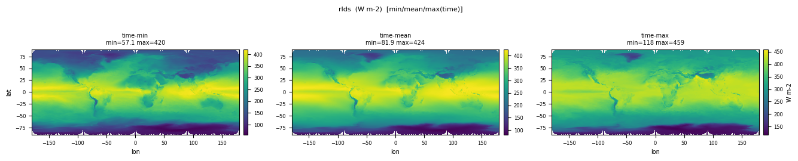
| Quantity | Expected | Observed |
|---|---|---|
| min | 100 | — |
| mean | ~345 | — |
| max | 450 | — |
Observed numbers above are from rlds_tavg-u-hxy-si_mon_glb_gn_AWI-ESM-3_picontrol_r1i1p1f1_158701-158712.nc. Per-file detail and diagnosis below.
| Status | File (6) | min | mean | max |
|---|---|---|---|---|
| FAIL DATA_INTEGRITY | rlds_tavg-u-hxy-si_mon_glb_gn_AWI-ESM-3_picontrol_r1i1p1f1_158701-158712.ncAll 37761132 cells are non-finite (NaN/fill-value). The producing rule emitted a file with no real data — likely the source field is missing/empty or a divide-by-zero in the compute step. Investigate the rule's pipeline in `awi-esm3-veg-hr-variables/lrcs_seaice/`. | — | — | — |
| PASS | rlds_tavg-u-hxy-u_1hr_30s-90s_gn_AWI-ESM-3_picontrol_r1i1p1f1_158701010030-158712312330.nc | 39.992 | 287.6 | 509.2 |
| PASS | rlds_tavg-u-hxy-u_1hr_glb_gn_AWI-ESM-3_picontrol_r1i1p1f1_158701010030-158712312330.nc | 39.992 | 340.6 | 511.9 |
| PASS | rlds_tavg-u-hxy-u_3hr_glb_gn_AWI-ESM-3_picontrol_r1i1p1f1_158701010130-158712312230.nc | 40.113 | 340.6 | 505.9 |
| PASS | rlds_tavg-u-hxy-u_day_glb_gn_AWI-ESM-3_picontrol_r1i1p1f1_15870101-15871231.nc | 41.027 | 340.6 | 475.1 |
| PASS | rlds_tavg-u-hxy-u_mon_glb_gn_AWI-ESM-3_picontrol_r1i1p1f1_158701-158712.nc | 57.092 | 340.6 | 459.1 |
Surface upwelling shortwave radiation
CF: surface_upwelling_shortwave_flux_in_air
Surface upwelling shortwave radiation
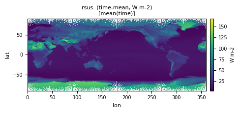
| Quantity | Expected | Observed |
|---|---|---|
| min | 0 | — |
| mean | ~24 | — |
| max | 300 | — |
Observed numbers above are from rsus_tavg-u-hxy-si_day_glb_gn_AWI-ESM-3_picontrol_r1i1p1f1_15870101-15871231.nc. Per-file detail and diagnosis below.
| Status | File (6) | min | mean | max |
|---|---|---|---|---|
| FAIL DATA_INTEGRITY | rsus_tavg-u-hxy-si_day_glb_gn_AWI-ESM-3_picontrol_r1i1p1f1_15870101-15871231.ncAll 1148567765 cells are non-finite (NaN/fill-value). The producing rule emitted a file with no real data — likely the source field is missing/empty or a divide-by-zero in the compute step. Investigate the rule's pipeline in `awi-esm3-veg-hr-variables/lrcs_seaice/`. | — | — | — |
| WARN | rsus_tavg-u-hxy-si_mon_glb_gn_AWI-ESM-3_picontrol_r1i1p1f1_158701-158712.ncmax 366 slightly above expected_max 300 | -1.192e-05 | 55.671 | 365.9 |
| WARN | rsus_tavg-u-hxy-u_1hr_glb_gn_AWI-ESM-3_picontrol_r1i1p1f1_158701010030-158712312330.ncmax 985 slightly above expected_max 300 | -2.083e-04 | 24.606 | 985.2 |
| WARN | rsus_tavg-u-hxy-u_3hr_glb_gn_AWI-ESM-3_picontrol_r1i1p1f1_158701010130-158712312230.ncmax 961 slightly above expected_max 300 | -1.157e-04 | 24.606 | 961.2 |
| WARN | rsus_tavg-u-hxy-u_day_glb_gn_AWI-ESM-3_picontrol_r1i1p1f1_15870101-15871231.ncmax 394 slightly above expected_max 300 | -2.597e-05 | 24.606 | 394.2 |
| WARN | rsus_tavg-u-hxy-u_mon_glb_gn_AWI-ESM-3_picontrol_r1i1p1f1_158701-158712.ncmax 378 slightly above expected_max 300 | -1.192e-05 | 24.614 | 378.1 |
total emission of DMS from all biomass burning
CF: tendency_of_atmosphere_mass_content_of_dimethyl_sulfide_due_to_emission_from_fires
Total emission rate of dimethyl sulfide (DMS) into the atmosphere from all biomass burning (natural and anthropogenic)
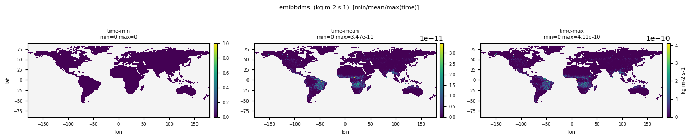
| Quantity | Expected | Observed |
|---|---|---|
| min | 0 | 0 |
| mean | ~0 | 1.325e-12 |
| max | ~1e-12 | 2.729e-09 |
Observed numbers above are from emibbdms_tavg-u-hxy-u_mon_glb_gn_AWI-ESM-3_picontrol_r1i1p1f1_158601-158612.nc. Per-file detail and diagnosis below.
| Status | File (2) | min | mean | max |
|---|---|---|---|---|
| FAIL EXTREME_OUTLIER | emibbdms_tavg-u-hxy-u_mon_glb_gn_AWI-ESM-3_picontrol_r1i1p1f1_158601-158612.ncExtreme outlier: observed range (min=0, max=2.729e-09) overshoots the literature bound by >20x. This is far beyond any HR-vs-LR resolution effect; likely a numerical instability, sentinel-value leak, double unit conversion, or accumulated drift. The bound is probably correct — investigate the rule's compute step rather than loosen it. | 0 | 1.325e-12 | 2.729e-09 |
| FAIL EXTREME_OUTLIER | emibbdms_tavg-u-hxy-u_mon_glb_gn_AWI-ESM-3_picontrol_r1i1p1f1_158701-158712.ncExtreme outlier: observed range (min=0, max=2.883e-09) overshoots the literature bound by >20x. This is far beyond any HR-vs-LR resolution effect; likely a numerical instability, sentinel-value leak, double unit conversion, or accumulated drift. The bound is probably correct — investigate the rule's compute step rather than loosen it. | 0 | 1.280e-12 | 2.883e-09 |
Precipitation
CF: precipitation_flux
Total precipitation flux
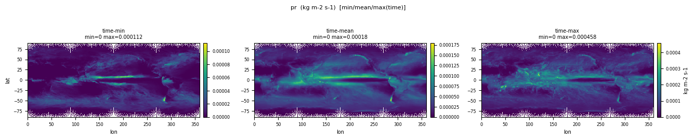
| Quantity | Expected | Observed |
|---|---|---|
| min | 0 | 0 |
| mean | ~3e-5 (~2.7 mm/day) | 3.560e-05 |
| max | ~3e-4 | 0.01619 |
Observed numbers above are from pr_tavg-u-hxy-u_1hr_glb_gn_AWI-ESM-3_picontrol_r1i1p1f1_158701010030-158712312330.nc. Per-file detail and diagnosis below.
| Status | File (5) | min | mean | max |
|---|---|---|---|---|
| FAIL EXTREME_OUTLIER | pr_tavg-u-hxy-u_1hr_30s-90s_gn_AWI-ESM-3_picontrol_r1i1p1f1_158701010030-158712312330.ncExtreme outlier: observed range (min=0, max=0.01149) overshoots the literature bound by >20x. This is far beyond any HR-vs-LR resolution effect; likely a numerical instability, sentinel-value leak, double unit conversion, or accumulated drift. The bound is probably correct — investigate the rule's compute step rather than loosen it. | 0 | 2.928e-05 | 0.01149 |
| FAIL EXTREME_OUTLIER | pr_tavg-u-hxy-u_1hr_glb_gn_AWI-ESM-3_picontrol_r1i1p1f1_158701010030-158712312330.ncExtreme outlier: observed range (min=0, max=0.01619) overshoots the literature bound by >20x. This is far beyond any HR-vs-LR resolution effect; likely a numerical instability, sentinel-value leak, double unit conversion, or accumulated drift. The bound is probably correct — investigate the rule's compute step rather than loosen it. | 0 | 3.560e-05 | 0.01619 |
| FAIL EXTREME_OUTLIER | pr_tavg-u-hxy-u_3hr_glb_gn_AWI-ESM-3_picontrol_r1i1p1f1_158701010130-158712312230.ncExtreme outlier: observed range (min=0, max=0.01402) overshoots the literature bound by >20x. This is far beyond any HR-vs-LR resolution effect; likely a numerical instability, sentinel-value leak, double unit conversion, or accumulated drift. The bound is probably correct — investigate the rule's compute step rather than loosen it. | 0 | 3.560e-05 | 0.01402 |
| FAIL EXTREME_OUTLIER | pr_tavg-u-hxy-u_day_glb_gn_AWI-ESM-3_picontrol_r1i1p1f1_15870101-15871231.ncExtreme outlier: observed range (min=0, max=0.007016) overshoots the literature bound by >20x. This is far beyond any HR-vs-LR resolution effect; likely a numerical instability, sentinel-value leak, double unit conversion, or accumulated drift. The bound is probably correct — investigate the rule's compute step rather than loosen it. | 0 | 3.560e-05 | 0.007016 |
| WARN | pr_tavg-u-hxy-u_mon_glb_gn_AWI-ESM-3_picontrol_r1i1p1f1_158701-158712.ncmax 0.000801 slightly above expected_max 0.0003 | 0 | 3.560e-05 | 8.015e-04 |
Snowfall Flux
CF: snowfall_flux
at surface. Includes precipitation of all forms water in the solid phase. This is the 3-hour mean snowfall flux.
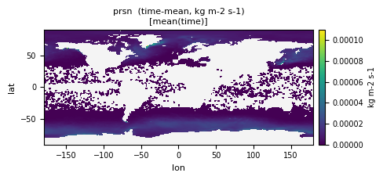
| Quantity | Expected | Observed |
|---|---|---|
| min | 0 | 0 |
| mean | ~5e-6 | 2.542e-06 |
| max | ~1e-4 | 0.002261 |
Observed numbers above are from prsn_tavg-u-hxy-u_3hr_glb_gn_AWI-ESM-3_picontrol_r1i1p1f1_158701010130-158712312230.nc. Per-file detail and diagnosis below.
| Status | File (5) | min | mean | max |
|---|---|---|---|---|
| WARN | prsn_tavg-u-hxy-si_mon_glb_gn_AWI-ESM-3_picontrol_r1i1p1f1_158701-158712.ncmax 0.000231 slightly above expected_max 0.0001 | 6.547e-30 | 1.004e-05 | 2.314e-04 |
| FAIL EXTREME_OUTLIER | prsn_tavg-u-hxy-u_3hr_glb_gn_AWI-ESM-3_picontrol_r1i1p1f1_158701010130-158712312230.ncExtreme outlier: observed range (min=0, max=0.002261) overshoots the literature bound by >20x. This is far beyond any HR-vs-LR resolution effect; likely a numerical instability, sentinel-value leak, double unit conversion, or accumulated drift. The bound is probably correct — investigate the rule's compute step rather than loosen it. | 0 | 2.542e-06 | 0.002261 |
| FAIL EXTREME_OUTLIER | prsn_tavg-u-hxy-u_6hr_glb_gn_AWI-ESM-3_picontrol_r1i1p1f1_158701010300-158712312100.ncExtreme outlier: observed range (min=0, max=0.002239) overshoots the literature bound by >20x. This is far beyond any HR-vs-LR resolution effect; likely a numerical instability, sentinel-value leak, double unit conversion, or accumulated drift. The bound is probably correct — investigate the rule's compute step rather than loosen it. | 0 | 2.542e-06 | 0.002239 |
| FAIL BOUNDS_OR_PEAK | prsn_tavg-u-hxy-u_day_glb_gn_AWI-ESM-3_picontrol_r1i1p1f1_15870101-15871231.ncGrid-cell extremes (min=0 / max=0.001946) overshoot the bound, but the global mean (2.542e-06) is reasonable. The bound was set for global mean at LR resolution; HR cells legitimately have higher peaks. Loosen the bound rather than touch the model. | 0 | 2.542e-06 | 0.001946 |
| WARN | prsn_tavg-u-hxy-u_mon_glb_gn_AWI-ESM-3_picontrol_r1i1p1f1_158701-158712.ncmax 0.000261 slightly above expected_max 0.0001 | 0 | 2.542e-06 | 2.609e-04 |
Carbon Mass Flux into Atmosphere Due to All Anthropogenic Emissions of CO2 [kgC m-2 s-1]
CF: tendency_of_atmosphere_mass_content_of_carbon_dioxide_expressed_as_carbon_due_to_anthropogenic_emission
This is requested only for the emission-driven coupled carbon climate model runs. Does not include natural fire sources but, includes all anthropogenic sources, including fossil fuel use, cement production, agricultural burning, and sources associated with anthropogenic land use change excluding forest regrowth.
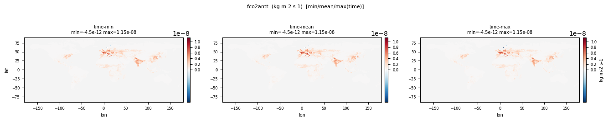
| Quantity | Expected | Observed |
|---|---|---|
| min | 0 | -1.100e-11 |
| mean | ~0 | 3.989e-10 |
| max | ~0 | 1.176e-08 |
Observed numbers above are from fco2antt_tavg-u-hxy-u_mon_glb_gn_AWI-ESM-3_picontrol_r1i1p1f1_158601-158612.nc. Per-file detail and diagnosis below.
| Status | File (2) | min | mean | max |
|---|---|---|---|---|
| FAIL PICONTROL_NONZERO | fco2antt_tavg-u-hxy-u_mon_glb_gn_AWI-ESM-3_picontrol_r1i1p1f1_158601-158612.ncThese should be ~0 in piControl (no anthropogenic forcing) but the model emits min=-1.100e-11, mean=3.989e-10, max=1.176e-08. Either the LUC forcing dataset isn't being honoured, or this is documented internal model behaviour — investigate, don't fix in pycmor. | -1.100e-11 | 3.989e-10 | 1.176e-08 |
| FAIL PICONTROL_NONZERO | fco2antt_tavg-u-hxy-u_mon_glb_gn_AWI-ESM-3_picontrol_r1i1p1f1_158701-158712.ncThese should be ~0 in piControl (no anthropogenic forcing) but the model emits min=-2.100e-11, mean=4.050e-10, max=1.017e-08. Either the LUC forcing dataset isn't being honoured, or this is documented internal model behaviour — investigate, don't fix in pycmor. | -2.100e-11 | 4.050e-10 | 1.017e-08 |
Evaporation Including Sublimation and Transpiration
CF: water_evapotranspiration_flux
at surface; flux of water into the atmosphere due to conversion of both liquid and solid phases to vapor (from underlying surface and vegetation)
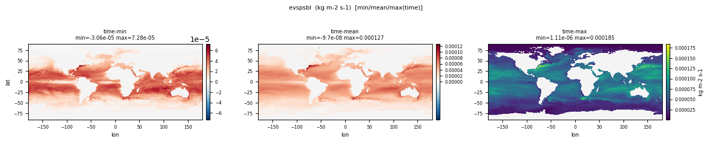
| Quantity | Expected | Observed |
|---|---|---|
| min | 0 | -4.347e-05 |
| mean | ~3.2e-5 | 3.591e-05 |
| max | ~2e-4 | 2.158e-04 |
Observed numbers above are from evspsbl_tavg-u-hxy-u_mon_glb_gn_AWI-ESM-3_picontrol_r1i1p1f1_158701-158712.nc. Per-file detail and diagnosis below.
| Status | File (6) | min | mean | max |
|---|---|---|---|---|
| PASS | evspsbl_tavg-u-hxy-ifs_mon_glb_gn_AWI-ESM-3_picontrol_r1i1p1f1_158701-158712.nc | -3.806e-05 | 2.624e-05 | 1.962e-04 |
| FAIL PHYS_NEG_VALUES | evspsbl_tavg-u-hxy-lnd_day_glb_gn_AWI-ESM-3_picontrol_r1i1p1f1_15870101-15871231.ncNegative values found (min=-8.796e-05) despite a physical lower bound of 0 — evspsbl cannot physically be negative. Mean=3.591e-05 and max=4.498e-04 are within range; the violation is at the lower end and likely numerical noise (e.g. flux scheme overshoot, regridding artefact) rather than a forcing issue. Check whether to clip to 0 in the rule, or whether the source field has a known sign-error. | -8.796e-05 | 3.591e-05 | 4.498e-04 |
| PASS | evspsbl_tavg-u-hxy-si_mon_glb_gn_AWI-ESM-3_picontrol_r1i1p1f1_158701-158712.nc | -3.806e-05 | 2.624e-05 | 1.962e-04 |
| PASS | evspsbl_tavg-u-hxy-u_mon_glb_gn_AWI-ESM-3_picontrol_r1i1p1f1_158601-158612.nc | 0 | 1.686e-05 | 1.060e-04 |
| PASS | evspsbl_tavg-u-hxy-u_mon_glb_gn_AWI-ESM-3_picontrol_r1i1p1f1_158701-158712.nc | 0 | 1.678e-05 | 1.034e-04 |
| FAIL PHYS_NEG_VALUES | evspsbl_tavg-u-hxy-u_mon_glb_gn_AWI-ESM-3_picontrol_r1i1p1f1_158701-158712.ncNegative values found (min=-4.347e-05) despite a physical lower bound of 0 — evspsbl cannot physically be negative. Mean=3.591e-05 and max=2.158e-04 are within range; the violation is at the lower end and likely numerical noise (e.g. flux scheme overshoot, regridding artefact) rather than a forcing issue. Check whether to clip to 0 in the rule, or whether the source field has a known sign-error. | -4.347e-05 | 3.591e-05 | 2.158e-04 |
Surface upward latent heat flux
CF: surface_upward_latent_heat_flux
Hourly surface upward latent heat flux
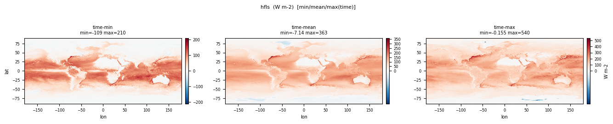
| Quantity | Expected | Observed |
|---|---|---|
| min | 0 | -220.0 |
| mean | ~80 | 89.861 |
| max | 250 | 1124.9 |
Observed numbers above are from hfls_tavg-u-hxy-u_day_glb_gn_AWI-ESM-3_picontrol_r1i1p1f1_15870101-15871231.nc. Per-file detail and diagnosis below.
| Status | File (4) | min | mean | max |
|---|---|---|---|---|
| FAIL PHYS_NEG_VALUES | hfls_tavg-u-hxy-u_1hr_glb_gn_AWI-ESM-3_picontrol_r1i1p1f1_158701010030-158712312330.ncNegative values found (min=-443.4) despite a physical lower bound of 0 — hfls cannot physically be negative. Mean=89.861 and max=1508.4 are within range; the violation is at the lower end and likely numerical noise (e.g. flux scheme overshoot, regridding artefact) rather than a forcing issue. Check whether to clip to 0 in the rule, or whether the source field has a known sign-error. | -443.4 | 89.861 | 1508.4 |
| FAIL PHYS_NEG_VALUES | hfls_tavg-u-hxy-u_3hr_glb_gn_AWI-ESM-3_picontrol_r1i1p1f1_158701010130-158712312230.ncNegative values found (min=-430.4) despite a physical lower bound of 0 — hfls cannot physically be negative. Mean=89.861 and max=1389.1 are within range; the violation is at the lower end and likely numerical noise (e.g. flux scheme overshoot, regridding artefact) rather than a forcing issue. Check whether to clip to 0 in the rule, or whether the source field has a known sign-error. | -430.4 | 89.861 | 1389.1 |
| FAIL PHYS_NEG_VALUES | hfls_tavg-u-hxy-u_day_glb_gn_AWI-ESM-3_picontrol_r1i1p1f1_15870101-15871231.ncNegative values found (min=-220.0) despite a physical lower bound of 0 — hfls cannot physically be negative. Mean=89.861 and max=1124.9 are within range; the violation is at the lower end and likely numerical noise (e.g. flux scheme overshoot, regridding artefact) rather than a forcing issue. Check whether to clip to 0 in the rule, or whether the source field has a known sign-error. | -220.0 | 89.861 | 1124.9 |
| FAIL PHYS_NEG_VALUES | hfls_tavg-u-hxy-u_mon_glb_gn_AWI-ESM-3_picontrol_r1i1p1f1_158701-158712.ncNegative values found (min=-108.7) despite a physical lower bound of 0 — hfls cannot physically be negative. Mean=89.857 and max=539.7 are within range; the violation is at the lower end and likely numerical noise (e.g. flux scheme overshoot, regridding artefact) rather than a forcing issue. Check whether to clip to 0 in the rule, or whether the source field has a known sign-error. | -108.7 | 89.857 | 539.7 |
Grid-Cell Area for Atmospheric Grid Variables
CF: cell_area
Cell areas for any grid used to report atmospheric variables and any other variable using that grid (e.g., soil moisture content). These cell areas should be defined to enable exact calculation of global integrals (e.g., of vertical fluxes of energy at the surface and top of the atmosphere).
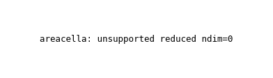
| Quantity | Expected | Observed |
|---|---|---|
| min | ~1e8 | 2.440e+08 |
| mean | ~5e10 | 1.211e+09 |
| max | ~6e10 | 1.419e+09 |
Observed numbers above are from areacella_ti-u-hxy-u_fx_glb_gn_AWI-ESM-3_picontrol_r1i1p1f1.nc. Per-file detail and diagnosis below.
| Status | File (2) | min | mean | max |
|---|---|---|---|---|
| FAIL BOUNDS_OR_PEAK | areacella_ti-u-hxy-u_fx_glb_gn_AWI-ESM-3_picontrol_r1i1p1f1.ncGrid-cell extremes (min=2.440e+08 / max=1.419e+09) overshoot the bound, but the global mean (1.211e+09) is reasonable. The bound was set for global mean at LR resolution; HR cells legitimately have higher peaks. Loosen the bound rather than touch the model. | 2.440e+08 | 1.211e+09 | 1.419e+09 |
| FAIL BOUNDS_OR_PEAK | areacella_ti-u-hxy-u_fx_glb_gn_AWI-ESM-3_picontrol_r1i1p1f1.ncGrid-cell extremes (min=2.440e+08 / max=1.419e+09) overshoot the bound, but the global mean (1.211e+09) is reasonable. The bound was set for global mean at LR resolution; HR cells legitimately have higher peaks. Loosen the bound rather than touch the model. | 2.440e+08 | 1.211e+09 | 1.419e+09 |
Surface Carbon Mass Flux into the Atmosphere Due to Natural Sources [kgC m-2 s-1]
CF: surface_upward_mass_flux_of_carbon_dioxide_expressed_as_carbon_due_to_emission_from_natural_sources
This is what the atmosphere sees (on its own grid). This field should be equivalent to the combined natural fluxes of carbon (requested in the L_mon and O_mon tables) that account for natural exchanges between the atmosphere and land or ocean reservoirs (i.e., "net ecosystem biospheric productivity", for land, and "air to sea CO2 flux", for ocean.)
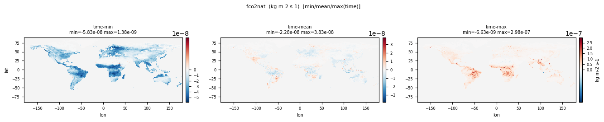
| Quantity | Expected | Observed |
|---|---|---|
| min | -3e-7 | -8.205e-08 |
| mean | ~0 | -8.295e-10 |
| max | ~3e-7 | 1.839e-06 |
Observed numbers above are from fco2nat_tavg-u-hxy-u_mon_glb_gn_AWI-ESM-3_picontrol_r1i1p1f1_158601-158612.nc. Per-file detail and diagnosis below.
| Status | File (2) | min | mean | max |
|---|---|---|---|---|
| FAIL BOUNDS_OR_PEAK | fco2nat_tavg-u-hxy-u_mon_glb_gn_AWI-ESM-3_picontrol_r1i1p1f1_158601-158612.ncGrid-cell extremes (min=-8.205e-08 / max=1.839e-06) overshoot the bound, but the global mean (-8.295e-10) is reasonable. The bound was set for global mean at LR resolution; HR cells legitimately have higher peaks. Loosen the bound rather than touch the model. | -8.205e-08 | -8.295e-10 | 1.839e-06 |
| FAIL BOUNDS_OR_PEAK | fco2nat_tavg-u-hxy-u_mon_glb_gn_AWI-ESM-3_picontrol_r1i1p1f1_158701-158712.ncGrid-cell extremes (min=-8.162e-08 / max=1.935e-06) overshoot the bound, but the global mean (-5.992e-10) is reasonable. The bound was set for global mean at LR resolution; HR cells legitimately have higher peaks. Loosen the bound rather than touch the model. | -8.162e-08 | -5.992e-10 | 1.935e-06 |
Surface upward sensible heat flux
CF: surface_upward_sensible_heat_flux
Hourly surface upward sensible heat flux
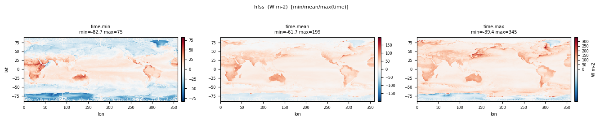
| Quantity | Expected | Observed |
|---|---|---|
| min | -150 | -2567.5 |
| mean | ~20 | 19.183 |
| max | 300 | 1975.0 |
Observed numbers above are from hfss_tavg-u-hxy-u_1hr_glb_gn_AWI-ESM-3_picontrol_r1i1p1f1_158701010030-158712312330.nc. Per-file detail and diagnosis below.
| Status | File (4) | min | mean | max |
|---|---|---|---|---|
| FAIL BOUNDS_OR_PEAK | hfss_tavg-u-hxy-u_1hr_glb_gn_AWI-ESM-3_picontrol_r1i1p1f1_158701010030-158712312330.ncGrid-cell extremes (min=-2567.5 / max=1975.0) overshoot the bound, but the global mean (19.183) is reasonable. The bound was set for global mean at LR resolution; HR cells legitimately have higher peaks. Loosen the bound rather than touch the model. | -2567.5 | 19.183 | 1975.0 |
| FAIL BOUNDS_TIGHT_MINOR | hfss_tavg-u-hxy-u_3hr_glb_gn_AWI-ESM-3_picontrol_r1i1p1f1_158701010130-158712312230.ncMarginal overshoot of the literature bound. The bound likely needs widening. | -2035.1 | 19.183 | 1699.6 |
| WARN | hfss_tavg-u-hxy-u_day_glb_gn_AWI-ESM-3_picontrol_r1i1p1f1_15870101-15871231.ncmin -641 slightly below expected_min -150; max 1.15e+03 slightly above expected_max 300 | -640.6 | 19.183 | 1153.7 |
| WARN | hfss_tavg-u-hxy-u_mon_glb_gn_AWI-ESM-3_picontrol_r1i1p1f1_158701-158712.ncmax 430 slightly above expected_max 300 | -103.6 | 19.179 | 430.4 |
Convective Precipitation
CF: convective_precipitation_flux
at surface; includes both liquid and solid phases.
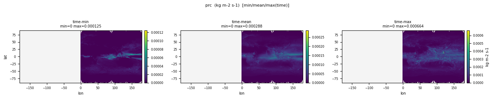
| Quantity | Expected | Observed |
|---|---|---|
| min | 0 | 0 |
| mean | ~1.5e-5 | 2.205e-05 |
| max | ~2e-4 | 0.003077 |
Observed numbers above are from prc_tavg-u-hxy-u_day_glb_gn_AWI-ESM-3_picontrol_r1i1p1f1_15870101-15871231.nc. Per-file detail and diagnosis below.
| Status | File (2) | min | mean | max |
|---|---|---|---|---|
| FAIL BOUNDS_OR_PEAK | prc_tavg-u-hxy-u_day_glb_gn_AWI-ESM-3_picontrol_r1i1p1f1_15870101-15871231.ncGrid-cell extremes (min=0 / max=0.003077) overshoot the bound, but the global mean (2.205e-05) is reasonable. The bound was set for global mean at LR resolution; HR cells legitimately have higher peaks. Loosen the bound rather than touch the model. | 0 | 2.205e-05 | 0.003077 |
| WARN | prc_tavg-u-hxy-u_mon_glb_gn_AWI-ESM-3_picontrol_r1i1p1f1_158701-158712.ncmax 0.000664 slightly above expected_max 0.0002 | 0 | 2.205e-05 | 6.641e-04 |
Surface Downward Eastward Wind Stress
CF: surface_downward_eastward_stress
Downward eastward wind stress at the surface
| Quantity | Expected | Observed |
|---|---|---|
| min | -0.5 | -1.957 |
| mean | ~0 | 0.00627 |
| max | 0.5 | 3.073 |
| Status | File (1) | min | mean | max |
|---|---|---|---|---|
| FAIL BOUNDS_OR_PEAK | tauu_tavg-u-hxy-u_mon_glb_gn_AWI-ESM-3_picontrol_r1i1p1f1_158701-158712.ncGrid-cell extremes (min=-1.957 / max=3.073) overshoot the bound, but the global mean (0.00627) is reasonable. The bound was set for global mean at LR resolution; HR cells legitimately have higher peaks. Loosen the bound rather than touch the model. | -1.957 | 0.00627 | 3.073 |
Surface Downward Northward Wind Stress
CF: surface_downward_northward_stress
surface, now requesting daily output.
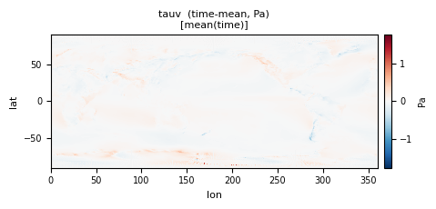
| Quantity | Expected | Observed |
|---|---|---|
| min | -0.5 | -2.390 |
| mean | ~0 | 0.00203 |
| max | 0.5 | 3.538 |
| Status | File (1) | min | mean | max |
|---|---|---|---|---|
| FAIL BOUNDS_OR_PEAK | tauv_tavg-u-hxy-u_mon_glb_gn_AWI-ESM-3_picontrol_r1i1p1f1_158701-158712.ncGrid-cell extremes (min=-2.390 / max=3.538) overshoot the bound, but the global mean (0.00203) is reasonable. The bound was set for global mean at LR resolution; HR cells legitimately have higher peaks. Loosen the bound rather than touch the model. | -2.390 | 0.00203 | 3.538 |
Eastward Wind
CF: eastward_wind
Zonal wind (positive in a eastward direction).
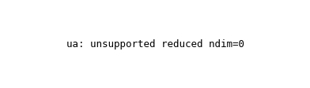
| Quantity | Expected | Observed |
|---|---|---|
| min | -80 | -66.853 |
| mean | ~15 (jet) / ~0 global | 0.02157 |
| max | 100 | 69.185 |
Observed numbers above are from ua_tpt-p3-hxy-air_6hr_glb_gn_AWI-ESM-3_picontrol_r1i1p1f1_158701010900-158712312100.nc. Per-file detail and diagnosis below.
| Status | File (6) | min | mean | max |
|---|---|---|---|---|
| WARN | ua_tavg-p19-hxy-air_day_glb_gn_AWI-ESM-3_picontrol_r1i1p1f1_15870101-15871231.ncmin -116 slightly below expected_min -80; max 178 slightly above expected_max 100 | -115.8 | 5.505 | 178.1 |
| WARN | ua_tavg-p19-hxy-air_mon_glb_gn_AWI-ESM-3_picontrol_r1i1p1f1_158701-158712.ncmax 141 slightly above expected_max 100 | -63.724 | 5.502 | 141.2 |
| FAIL BOUNDS_OR_PEAK | ua_tpt-p3-hxy-air_6hr_glb_gn_AWI-ESM-3_picontrol_r1i1p1f1_158701010900-158712312100.ncGrid-cell extremes (min=-66.853 / max=69.185) overshoot the bound, but the global mean (0.02157) is reasonable. The bound was set for global mean at LR resolution; HR cells legitimately have higher peaks. Loosen the bound rather than touch the model. | -66.853 | 0.02157 | 69.185 |
| FAIL SIGN_FLIP | ua_tpt-p3-hxy-air_6hr_glb_gn_AWI-ESM-3_picontrol_r1i1p1f1_158801010300-158801010300.ncMean -0.2637 has the wrong sign vs the expected 15.000. The rule may be saving an anomaly or has the wrong source variable. | -31.852 | -0.2637 | 39.867 |
| PASS | ua_tpt-p7h-hxy-air_6hr_glb_gn_AWI-ESM-3_picontrol_r1i1p1f1_158701010900-158712312100.nc | -66.853 | 3.129 | 102.1 |
| PASS | ua_tpt-p7h-hxy-air_6hr_glb_gn_AWI-ESM-3_picontrol_r1i1p1f1_158801010300-158801010300.nc | -34.490 | 3.292 | 74.655 |
WARN
Percentage Cloud Cover
CF: cloud_area_fraction_in_atmosphere_layer
Percentage cloud cover, including both large-scale and convective cloud.
| Quantity | Expected | Observed |
|---|---|---|
| min | 0 | 0 |
| mean | ~30 | 4.744 |
| max | 100 | 96.703 |
Observed numbers above are from cl_tavg-al-hxy-u_mon_glb_gn_AWI-ESM-3_picontrol_r1i1p1f1_158701-158712.nc. Per-file detail and diagnosis below.
| Status | File (2) | min | mean | max |
|---|---|---|---|---|
| WARN | cl_tavg-al-hxy-u_day_glb_gn_AWI-ESM-3_picontrol_r1i1p1f1_15870101-15871231.ncmean 4.74 off by 0.16x vs expected ~30 | 0 | 4.744 | 100.0 |
| WARN | cl_tavg-al-hxy-u_mon_glb_gn_AWI-ESM-3_picontrol_r1i1p1f1_158701-158712.ncmean 4.74 off by 0.16x vs expected ~30 | 0 | 4.744 | 96.703 |
Mass Fraction of Cloud Ice
CF: mass_fraction_of_cloud_ice_in_air
Calculated as the mass of cloud ice in the grid cell divided by the mass of air (including the water in all phases) in the grid cell. This includes precipitating hydrometeors ONLY if the precipitating hydrometeors affect the calculation of radiative transfer in model.
| Quantity | Expected | Observed |
|---|---|---|
| min | 0 | 0 |
| mean | ~1e-6 | 9.843e-07 |
| max | ~1e-3 | 1.185e-04 |
| Status | File (1) | min | mean | max |
|---|---|---|---|---|
| WARN | cli_tavg-al-hxy-u_mon_glb_gn_AWI-ESM-3_picontrol_r1i1p1f1_158701-158712.ncobserved range [0, 0.000119] is 0.12x the expected envelope — possibly too small | 0 | 9.843e-07 | 1.185e-04 |
Ice Water Path
CF: atmosphere_mass_content_of_cloud_ice
Ice water path
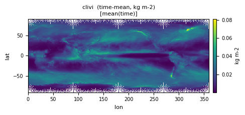
| Quantity | Expected | Observed |
|---|---|---|
| min | 0 | 0 |
| mean | ~0.02 | 0.01858 |
| max | ~1 | 2.469 |
Observed numbers above are from clivi_tavg-u-hxy-u_day_glb_gn_AWI-ESM-3_picontrol_r1i1p1f1_15870101-15871231.nc. Per-file detail and diagnosis below.
| Status | File (2) | min | mean | max |
|---|---|---|---|---|
| WARN | clivi_tavg-u-hxy-u_day_glb_gn_AWI-ESM-3_picontrol_r1i1p1f1_15870101-15871231.ncmax 2.47 slightly above expected_max 1 | 0 | 0.01858 | 2.469 |
| WARN | clivi_tavg-u-hxy-u_mon_glb_gn_AWI-ESM-3_picontrol_r1i1p1f1_158701-158712.ncobserved range [0, 0.237] is 0.24x the expected envelope — possibly too small | 0 | 0.01858 | 0.2368 |
Condensed Water Path
CF: atmosphere_mass_content_of_cloud_condensed_water
Liquid water path
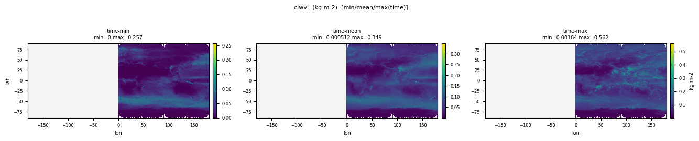
| Quantity | Expected | Observed |
|---|---|---|
| min | 0 | 0 |
| mean | ~0.1 | 0.06024 |
| max | ~2 | 3.888 |
Observed numbers above are from clwvi_tavg-u-hxy-u_day_glb_gn_AWI-ESM-3_picontrol_r1i1p1f1_15870101-15871231.nc. Per-file detail and diagnosis below.
| Status | File (2) | min | mean | max |
|---|---|---|---|---|
| WARN | clwvi_tavg-u-hxy-u_day_glb_gn_AWI-ESM-3_picontrol_r1i1p1f1_15870101-15871231.ncmax 3.89 slightly above expected_max 2 | 0 | 0.06024 | 3.888 |
| WARN | clwvi_tavg-u-hxy-u_mon_glb_gn_AWI-ESM-3_picontrol_r1i1p1f1_158701-158712.ncobserved range [0, 0.562] is 0.28x the expected envelope — possibly too small | 0 | 0.06023 | 0.5619 |
total emission rate of black carbon aerosol mass from all biomass burning
CF: tendency_of_atmosphere_mass_content_of_elemental_carbon_dry_aerosol_particles_due_to_emission_from_fires
Total emission rate of black carbon aerosol into the atmosphere from all biomass burning (natural and anthropogenic)
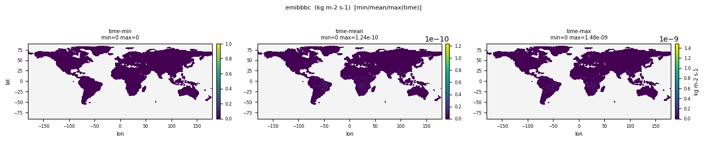
| Quantity | Expected | Observed |
|---|---|---|
| min | 0 | 0 |
| mean | ~1e-13 | 7.211e-13 |
| max | ~1e-9 | 1.485e-09 |
Observed numbers above are from emibbbc_tavg-u-hxy-u_mon_glb_gn_AWI-ESM-3_picontrol_r1i1p1f1_158601-158612.nc. Per-file detail and diagnosis below.
| Status | File (2) | min | mean | max |
|---|---|---|---|---|
| WARN | emibbbc_tavg-u-hxy-u_mon_glb_gn_AWI-ESM-3_picontrol_r1i1p1f1_158601-158612.ncmax 1.48e-09 slightly above expected_max 1e-09; mean 7.21e-13 off by 7.2x vs expected ~1e-13 | 0 | 7.211e-13 | 1.485e-09 |
| WARN | emibbbc_tavg-u-hxy-u_mon_glb_gn_AWI-ESM-3_picontrol_r1i1p1f1_158701-158712.ncmax 1.57e-09 slightly above expected_max 1e-09; mean 6.97e-13 off by 7x vs expected ~1e-13 | 0 | 6.967e-13 | 1.569e-09 |
total emission rate of CO from all biomass burning
CF: tendency_of_atmosphere_mass_content_of_carbon_monoxide_due_to_emission_from_fires
Total emission rate of carbon monoxide (CO) into the atmosphere from all biomass burning (natural and anthropogenic)
| Quantity | Expected | Observed |
|---|---|---|
| min | 0 | 0 |
| mean | ~1e-11 | 1.228e-10 |
| max | ~1e-7 | 2.528e-07 |
Observed numbers above are from emibbco_tavg-u-hxy-u_mon_glb_gn_AWI-ESM-3_picontrol_r1i1p1f1_158601-158612.nc. Per-file detail and diagnosis below.
| Status | File (2) | min | mean | max |
|---|---|---|---|---|
| WARN | emibbco_tavg-u-hxy-u_mon_glb_gn_AWI-ESM-3_picontrol_r1i1p1f1_158601-158612.ncmax 2.53e-07 slightly above expected_max 1e-07; mean 1.23e-10 off by 12x vs expected ~1e-11 | 0 | 1.228e-10 | 2.528e-07 |
| WARN | emibbco_tavg-u-hxy-u_mon_glb_gn_AWI-ESM-3_picontrol_r1i1p1f1_158701-158712.ncmax 2.67e-07 slightly above expected_max 1e-07; mean 1.19e-10 off by 12x vs expected ~1e-11 | 0 | 1.186e-10 | 2.671e-07 |
total emission of organic aerosol from all biomass burning
CF: tendency_of_atmosphere_mass_content_of_particulate_organic_matter_dry_aerosol_particles_due_to_emission_from_fires
Total emission rate of particulate organic matter (organic aerosol) into the atmosphere from all biomass burning (natural and anthropogenic)
| Quantity | Expected | Observed |
|---|---|---|
| min | 0 | 0 |
| mean | ~1e-12 | 5.106e-12 |
| max | ~1e-8 | 1.051e-08 |
Observed numbers above are from emibboa_tavg-u-hxy-u_mon_glb_gn_AWI-ESM-3_picontrol_r1i1p1f1_158601-158612.nc. Per-file detail and diagnosis below.
| Status | File (2) | min | mean | max |
|---|---|---|---|---|
| WARN | emibboa_tavg-u-hxy-u_mon_glb_gn_AWI-ESM-3_picontrol_r1i1p1f1_158601-158612.ncmean 5.11e-12 off by 5.1x vs expected ~1e-12 | 0 | 5.106e-12 | 1.051e-08 |
| PASS | emibboa_tavg-u-hxy-u_mon_glb_gn_AWI-ESM-3_picontrol_r1i1p1f1_158701-158712.nc | 0 | 4.934e-12 | 1.111e-08 |
total emission rate of SO2 from all biomass burning
CF: tendency_of_atmosphere_mass_content_of_sulfur_dioxide_due_to_emission_from_fires
Total emission rate of SO2 into the atmosphere from all biomass burning (natural and anthropogenic).
| Quantity | Expected | Observed |
|---|---|---|
| min | 0 | 0 |
| mean | ~1e-13 | 9.355e-13 |
| max | ~1e-9 | 1.926e-09 |
Observed numbers above are from emibbso2_tavg-u-hxy-u_mon_glb_gn_AWI-ESM-3_picontrol_r1i1p1f1_158601-158612.nc. Per-file detail and diagnosis below.
| Status | File (2) | min | mean | max |
|---|---|---|---|---|
| WARN | emibbso2_tavg-u-hxy-u_mon_glb_gn_AWI-ESM-3_picontrol_r1i1p1f1_158601-158612.ncmax 1.93e-09 slightly above expected_max 1e-09; mean 9.36e-13 off by 9.4x vs expected ~1e-13 | 0 | 9.355e-13 | 1.926e-09 |
| WARN | emibbso2_tavg-u-hxy-u_mon_glb_gn_AWI-ESM-3_picontrol_r1i1p1f1_158701-158712.ncmax 2.04e-09 slightly above expected_max 1e-09; mean 9.04e-13 off by 9x vs expected ~1e-13 | 0 | 9.039e-13 | 2.035e-09 |
total emission rate of NMVOC from all biomass burning
CF: tendency_of_atmosphere_mass_content_of_nmvoc_due_to_emission_from_fires
Total emission rate of non-methane volatile organic compounds (NMVOCs) from all biomass burning (natural and anthropogenic)
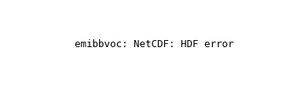
| Quantity | Expected | Observed |
|---|---|---|
| min | 0 | 0 |
| mean | ~1e-12 | 6.627e-12 |
| max | ~1e-8 | 1.364e-08 |
Observed numbers above are from emibbvoc_tavg-u-hxy-u_mon_glb_gn_AWI-ESM-3_picontrol_r1i1p1f1_158601-158612.nc. Per-file detail and diagnosis below.
| Status | File (2) | min | mean | max |
|---|---|---|---|---|
| WARN | emibbvoc_tavg-u-hxy-u_mon_glb_gn_AWI-ESM-3_picontrol_r1i1p1f1_158601-158612.ncmax 1.36e-08 slightly above expected_max 1e-08; mean 6.63e-12 off by 6.6x vs expected ~1e-12 | 0 | 6.627e-12 | 1.364e-08 |
| WARN | emibbvoc_tavg-u-hxy-u_mon_glb_gn_AWI-ESM-3_picontrol_r1i1p1f1_158701-158712.ncmax 1.44e-08 slightly above expected_max 1e-08; mean 6.4e-12 off by 6.4x vs expected ~1e-12 | 0 | 6.402e-12 | 1.442e-08 |
Near-Surface Specific Humidity
CF: specific_humidity
Near-surface (usually, 2 meter) specific humidity.
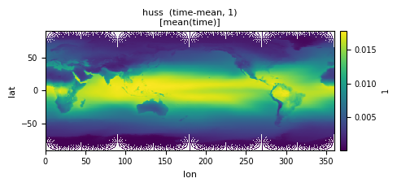
| Quantity | Expected | Observed |
|---|---|---|
| min | ~0.00001 | 4.191e-07 |
| mean | ~0.008 | 0.009933 |
| max | ~0.025 | 0.0303 |
Observed numbers above are from huss_tpt-h2m-hxy-u_1hr_glb_gn_AWI-ESM-3_picontrol_r1i1p1f1_158701010130-158712312330.nc. Per-file detail and diagnosis below.
| Status | File (6) | min | mean | max |
|---|---|---|---|---|
| PASS | huss_tavg-h2m-hxy-u_day_glb_gn_AWI-ESM-3_picontrol_r1i1p1f1_15870101-15871231.nc | 5.017e-07 | 0.009911 | 0.02658 |
| PASS | huss_tavg-h2m-hxy-u_mon_glb_gn_AWI-ESM-3_picontrol_r1i1p1f1_158701-158712.nc | 4.762e-06 | 0.009825 | 0.02352 |
| WARN | huss_tpt-h2m-hxy-u_1hr_glb_gn_AWI-ESM-3_picontrol_r1i1p1f1_158701010130-158712312330.ncmax 0.0303 slightly above expected_max 0.025 | 4.191e-07 | 0.009933 | 0.0303 |
| PASS | huss_tpt-h2m-hxy-u_1hr_glb_gn_AWI-ESM-3_picontrol_r1i1p1f1_158801010030-158801010030.nc | 1.869e-05 | 0.009632 | 0.02091 |
| WARN | huss_tpt-h2m-hxy-u_3hr_glb_gn_AWI-ESM-3_picontrol_r1i1p1f1_158701010430-158712312230.ncmax 0.0303 slightly above expected_max 0.025 | 4.265e-07 | 0.009933 | 0.0303 |
| PASS | huss_tpt-h2m-hxy-u_3hr_glb_gn_AWI-ESM-3_picontrol_r1i1p1f1_158801010130-158801010130.nc | 1.869e-05 | 0.009632 | 0.02091 |
Surface upwelling shortwave radiation
CF: surface_upwelling_longwave_flux_in_air
Hourly surface upwelling shortwave radiation
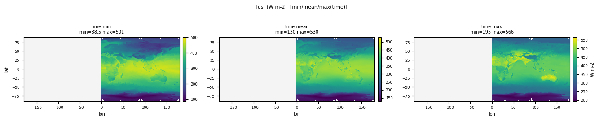
| Quantity | Expected | Observed |
|---|---|---|
| min | 150 | 56.897 |
| mean | ~398 | 400.7 |
| max | 520 | 869.9 |
Observed numbers above are from rlus_tavg-u-hxy-u_1hr_glb_gn_AWI-ESM-3_picontrol_r1i1p1f1_158701010030-158712312330.nc. Per-file detail and diagnosis below.
| Status | File (4) | min | mean | max |
|---|---|---|---|---|
| WARN | rlus_tavg-u-hxy-u_1hr_glb_gn_AWI-ESM-3_picontrol_r1i1p1f1_158701010030-158712312330.ncmax 870 slightly above expected_max 520 | 56.897 | 400.7 | 869.9 |
| WARN | rlus_tavg-u-hxy-u_3hr_glb_gn_AWI-ESM-3_picontrol_r1i1p1f1_158701010130-158712312230.ncmax 826 slightly above expected_max 520 | 62.967 | 400.7 | 826.4 |
| PASS | rlus_tavg-u-hxy-u_day_glb_gn_AWI-ESM-3_picontrol_r1i1p1f1_15870101-15871231.nc | 65.584 | 400.7 | 602.2 |
| PASS | rlus_tavg-u-hxy-u_mon_glb_gn_AWI-ESM-3_picontrol_r1i1p1f1_158701-158712.nc | 88.542 | 400.6 | 566.1 |
TOA Outgoing Clear-Sky Longwave Radiation
CF: toa_outgoing_longwave_flux_assuming_clear_sky
TOA outgoing clear sky longwave
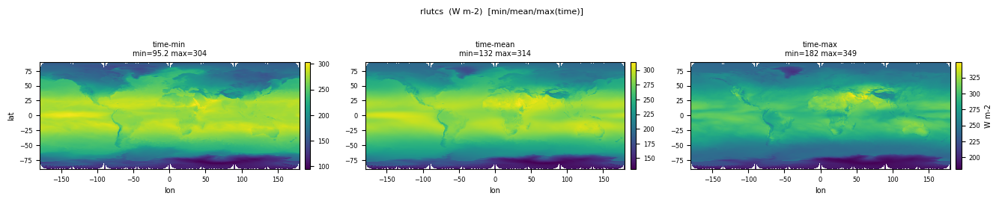
| Quantity | Expected | Observed |
|---|---|---|
| min | 150 | 80.325 |
| mean | ~266 | 267.5 |
| max | 330 | 367.8 |
Observed numbers above are from rlutcs_tavg-u-hxy-u_day_glb_gn_AWI-ESM-3_picontrol_r1i1p1f1_15870101-15871231.nc. Per-file detail and diagnosis below.
| Status | File (2) | min | mean | max |
|---|---|---|---|---|
| WARN | rlutcs_tavg-u-hxy-u_day_glb_gn_AWI-ESM-3_picontrol_r1i1p1f1_15870101-15871231.ncmin 80.3 slightly below expected_min 150 | 80.325 | 267.5 | 367.8 |
| PASS | rlutcs_tavg-u-hxy-u_mon_glb_gn_AWI-ESM-3_picontrol_r1i1p1f1_158701-158712.nc | 95.224 | 267.5 | 349.3 |
Hourly downward solar radiation flux at the surface
CF: surface_downwelling_shortwave_flux_in_air
Hourly downward solar radiation flux at the surface
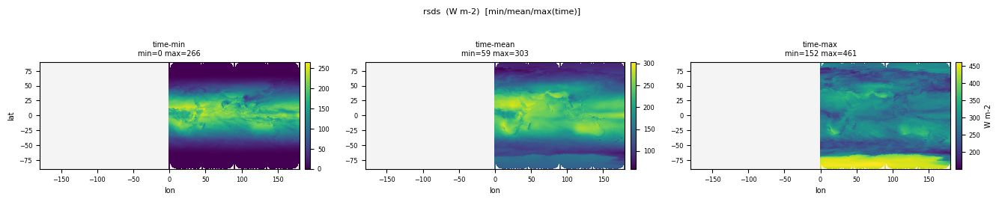
| Quantity | Expected | Observed |
|---|---|---|
| min | 0 | 0 |
| mean | ~185 | 196.0 |
| max | 400 | 1306.6 |
Observed numbers above are from rsds_tavg-u-hxy-u_1hr_glb_gn_AWI-ESM-3_picontrol_r1i1p1f1_158701010030-158712312330.nc. Per-file detail and diagnosis below.
| Status | File (7) | min | mean | max |
|---|---|---|---|---|
| PASS | rsds_tavg-u-hxy-si_day_glb_gn_AWI-ESM-3_picontrol_r1i1p1f1_15870101-15871231.nc | 0 | 97.404 | 454.4 |
| PASS | rsds_tavg-u-hxy-si_mon_glb_gn_AWI-ESM-3_picontrol_r1i1p1f1_158701-158712.nc | 0 | 97.488 | 445.3 |
| WARN | rsds_tavg-u-hxy-u_1hr_30s-90s_gn_AWI-ESM-3_picontrol_r1i1p1f1_158701010030-158712312330.ncmax 1.25e+03 slightly above expected_max 400 | 0 | 143.9 | 1245.9 |
| WARN | rsds_tavg-u-hxy-u_1hr_glb_gn_AWI-ESM-3_picontrol_r1i1p1f1_158701010030-158712312330.ncmax 1.31e+03 slightly above expected_max 400 | 0 | 196.0 | 1306.6 |
| WARN | rsds_tavg-u-hxy-u_3hr_glb_gn_AWI-ESM-3_picontrol_r1i1p1f1_158701010130-158712312230.ncmax 1.28e+03 slightly above expected_max 400 | 0 | 196.0 | 1280.9 |
| WARN | rsds_tavg-u-hxy-u_day_glb_gn_AWI-ESM-3_picontrol_r1i1p1f1_15870101-15871231.ncmax 482 slightly above expected_max 400 | 0 | 196.0 | 481.8 |
| PASS | rsds_tavg-u-hxy-u_mon_glb_gn_AWI-ESM-3_picontrol_r1i1p1f1_158701-158712.nc | 0 | 196.0 | 461.3 |
Net Shortwave Surface Radiation
CF: surface_net_downward_shortwave_flux
Net shortwave radiation
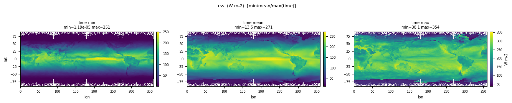
| Quantity | Expected | Observed |
|---|---|---|
| min | 0 | 1.192e-05 |
| mean | ~160 | 171.4 |
| max | 350 | 421.7 |
Observed numbers above are from rss_tavg-u-hxy-u_day_glb_gn_AWI-ESM-3_picontrol_r1i1p1f1_15870101-15871231.nc. Per-file detail and diagnosis below.
| Status | File (2) | min | mean | max |
|---|---|---|---|---|
| WARN | rss_tavg-u-hxy-u_day_glb_gn_AWI-ESM-3_picontrol_r1i1p1f1_15870101-15871231.ncmax 422 slightly above expected_max 350 | 1.192e-05 | 171.4 | 421.7 |
| PASS | rss_tavg-u-hxy-u_mon_glb_gn_AWI-ESM-3_picontrol_r1i1p1f1_158701-158712.nc | 1.192e-05 | 171.4 | 371.9 |
TOA Outgoing Clear-Sky Shortwave Radiation
CF: toa_outgoing_shortwave_flux_assuming_clear_sky
TOA outgoing clear sky shortwave
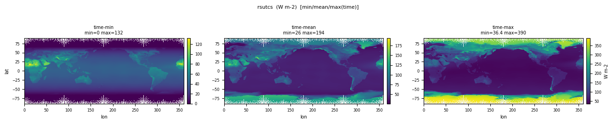
| Quantity | Expected | Observed |
|---|---|---|
| min | 0 | 0 |
| mean | ~53 | 54.772 |
| max | 300 | 407.7 |
Observed numbers above are from rsutcs_tavg-u-hxy-u_day_glb_gn_AWI-ESM-3_picontrol_r1i1p1f1_15870101-15871231.nc. Per-file detail and diagnosis below.
| Status | File (2) | min | mean | max |
|---|---|---|---|---|
| WARN | rsutcs_tavg-u-hxy-u_day_glb_gn_AWI-ESM-3_picontrol_r1i1p1f1_15870101-15871231.ncmax 408 slightly above expected_max 300 | 0 | 54.772 | 407.7 |
| WARN | rsutcs_tavg-u-hxy-u_mon_glb_gn_AWI-ESM-3_picontrol_r1i1p1f1_158701-158712.ncmax 390 slightly above expected_max 300 | 0 | 54.781 | 389.8 |
Water Flowing out of Snowpack
CF: liquid_water_mass_flux_into_soil_due_to_surface_snow_melt
surface_snow_melt_flux_into_soil_layer
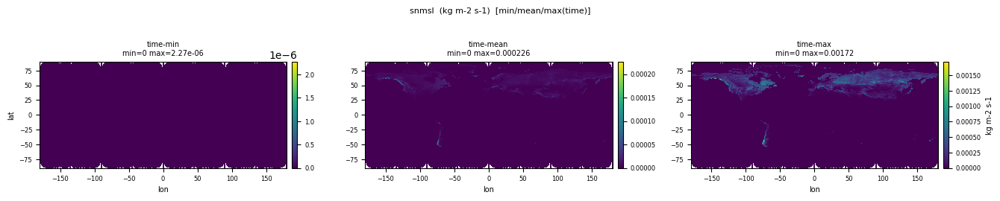
| Quantity | Expected | Observed |
|---|---|---|
| min | 0 | 0 |
| mean | 1e-6 | 6.865e-07 |
| max | 1e-3 | 0.001721 |
| Status | File (1) | min | mean | max |
|---|---|---|---|---|
| WARN | snmsl_tavg-u-hxy-lnd_day_glb_gn_AWI-ESM-3_picontrol_r1i1p1f1_15870101-15871231.ncmax 0.00172 slightly above expected_max 0.001 | 0 | 6.865e-07 | 0.001721 |
Eastward Near-Surface Wind
CF: eastward_wind
Eastward component of the near-surface (usually, 10 meters) wind
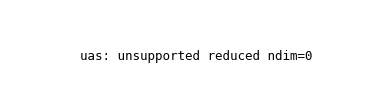
| Quantity | Expected | Observed |
|---|---|---|
| min | -30 | -39.800 |
| mean | ~0 | -0.536 |
| max | 30 | 43.335 |
Observed numbers above are from uas_tpt-h10m-hxy-u_1hr_glb_gn_AWI-ESM-3_picontrol_r1i1p1f1_158701010130-158712312330.nc. Per-file detail and diagnosis below.
| Status | File (6) | min | mean | max |
|---|---|---|---|---|
| PASS | uas_tavg-h10m-hxy-u_day_glb_gn_AWI-ESM-3_picontrol_r1i1p1f1_15870101-15871231.nc | -33.830 | -0.536 | 27.542 |
| PASS | uas_tavg-h10m-hxy-u_mon_glb_gn_AWI-ESM-3_picontrol_r1i1p1f1_158701-158712.nc | -16.509 | -0.5368 | 14.746 |
| WARN | uas_tpt-h10m-hxy-u_1hr_glb_gn_AWI-ESM-3_picontrol_r1i1p1f1_158701010130-158712312330.ncmin -39.8 slightly below expected_min -30; max 43.3 slightly above expected_max 30 | -39.800 | -0.536 | 43.335 |
| PASS | uas_tpt-h10m-hxy-u_1hr_glb_gn_AWI-ESM-3_picontrol_r1i1p1f1_158801010030-158801010030.nc | -20.486 | -0.736 | 25.667 |
| WARN | uas_tpt-h10m-hxy-u_3hr_glb_gn_AWI-ESM-3_picontrol_r1i1p1f1_158701010430-158712312230.ncmin -38.8 slightly below expected_min -30; max 43.3 slightly above expected_max 30 | -38.825 | -0.536 | 43.335 |
| PASS | uas_tpt-h10m-hxy-u_3hr_glb_gn_AWI-ESM-3_picontrol_r1i1p1f1_158801010130-158801010130.nc | -20.486 | -0.736 | 25.667 |
Northward Wind
CF: northward_wind
Meridional wind (positive in a northward direction).
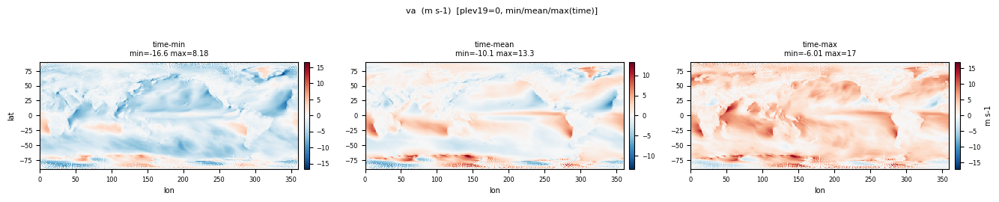
| Quantity | Expected | Observed |
|---|---|---|
| min | -60 | -78.872 |
| mean | ~0 | 0.03748 |
| max | 60 | 80.382 |
Observed numbers above are from va_tpt-p7h-hxy-air_6hr_glb_gn_AWI-ESM-3_picontrol_r1i1p1f1_158701010900-158712312100.nc. Per-file detail and diagnosis below.
| Status | File (6) | min | mean | max |
|---|---|---|---|---|
| WARN | va_tavg-p19-hxy-air_day_glb_gn_AWI-ESM-3_picontrol_r1i1p1f1_15870101-15871231.ncmin -142 slightly below expected_min -60; max 138 slightly above expected_max 60 | -141.8 | 0.007113 | 137.6 |
| PASS | va_tavg-p19-hxy-air_mon_glb_gn_AWI-ESM-3_picontrol_r1i1p1f1_158701-158712.nc | -67.344 | 0.007645 | 70.064 |
| PASS | va_tpt-p3-hxy-air_6hr_glb_gn_AWI-ESM-3_picontrol_r1i1p1f1_158701010900-158712312100.nc | -58.217 | 0.1291 | 57.245 |
| PASS | va_tpt-p3-hxy-air_6hr_glb_gn_AWI-ESM-3_picontrol_r1i1p1f1_158801010300-158801010300.nc | -33.118 | -0.397 | 40.831 |
| WARN | va_tpt-p7h-hxy-air_6hr_glb_gn_AWI-ESM-3_picontrol_r1i1p1f1_158701010900-158712312100.ncmin -78.9 slightly below expected_min -60; max 80.4 slightly above expected_max 60 | -78.872 | 0.03748 | 80.382 |
| PASS | va_tpt-p7h-hxy-air_6hr_glb_gn_AWI-ESM-3_picontrol_r1i1p1f1_158801010300-158801010300.nc | -51.280 | -0.2016 | 49.902 |
Northward Near-Surface Wind
CF: northward_wind
Near surface northward wind
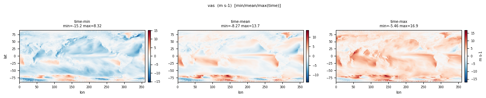
| Quantity | Expected | Observed |
|---|---|---|
| min | -30 | -39.417 |
| mean | ~0 | 0.1777 |
| max | 30 | 40.864 |
Observed numbers above are from vas_tpt-h10m-hxy-u_1hr_glb_gn_AWI-ESM-3_picontrol_r1i1p1f1_158701010130-158712312330.nc. Per-file detail and diagnosis below.
| Status | File (6) | min | mean | max |
|---|---|---|---|---|
| PASS | vas_tavg-h10m-hxy-u_day_glb_gn_AWI-ESM-3_picontrol_r1i1p1f1_15870101-15871231.nc | -28.148 | 0.1776 | 34.192 |
| PASS | vas_tavg-h10m-hxy-u_mon_glb_gn_AWI-ESM-3_picontrol_r1i1p1f1_158701-158712.nc | -16.251 | 0.174 | 19.152 |
| WARN | vas_tpt-h10m-hxy-u_1hr_glb_gn_AWI-ESM-3_picontrol_r1i1p1f1_158701010130-158712312330.ncmin -39.4 slightly below expected_min -30; max 40.9 slightly above expected_max 30 | -39.417 | 0.1777 | 40.864 |
| PASS | vas_tpt-h10m-hxy-u_1hr_glb_gn_AWI-ESM-3_picontrol_r1i1p1f1_158801010030-158801010030.nc | -22.421 | -0.2773 | 28.282 |
| WARN | vas_tpt-h10m-hxy-u_3hr_glb_gn_AWI-ESM-3_picontrol_r1i1p1f1_158701010430-158712312230.ncmin -39.2 slightly below expected_min -30; max 39.7 slightly above expected_max 30 | -39.209 | 0.1777 | 39.737 |
| PASS | vas_tpt-h10m-hxy-u_3hr_glb_gn_AWI-ESM-3_picontrol_r1i1p1f1_158801010130-158801010130.nc | -22.421 | -0.2773 | 28.282 |
Omega (=dp/dt)
CF: lagrangian_tendency_of_air_pressure
commonly referred to as "omega", this represents the vertical component of velocity in pressure coordinates (positive down)
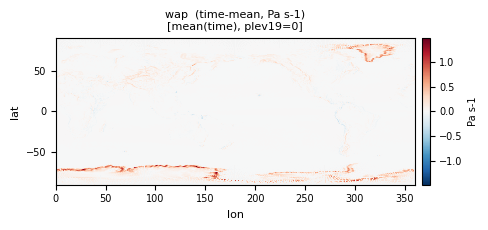
| Quantity | Expected | Observed |
|---|---|---|
| min | -5 | -9.259 |
| mean | ~0 | -3.431e-04 |
| max | 5 | 6.376 |
Observed numbers above are from wap_tavg-500hPa-hxy-air_day_glb_gn_AWI-ESM-3_picontrol_r1i1p1f1_15870101-15871231.nc. Per-file detail and diagnosis below.
| Status | File (3) | min | mean | max |
|---|---|---|---|---|
| WARN | wap_tavg-500hPa-hxy-air_day_glb_gn_AWI-ESM-3_picontrol_r1i1p1f1_15870101-15871231.ncmin -9.26 slightly below expected_min -5; max 6.38 slightly above expected_max 5 | -9.259 | -3.431e-04 | 6.376 |
| PASS | wap_tavg-p19-hxy-air_mon_glb_gn_AWI-ESM-3_picontrol_r1i1p1f1_158701-158712.nc | -1.973 | 7.491e-04 | 2.632 |
| WARN | wap_tavg-p19-hxy-u_day_glb_gn_AWI-ESM-3_picontrol_r1i1p1f1_15870101-15871231.ncmin -9.44 slightly below expected_min -5; max 10.1 slightly above expected_max 5 | -9.441 | 7.485e-04 | 10.145 |
Geopotential Height
CF: geopotential_height
Geopotential is the sum of the specific gravitational potential energy relative to the geoid and the specific centripetal potential energy. Geopotential height is the geopotential divided by the standard acceleration due to gravity. It is numerically similar to the altitude (or geometric height) and not to the quantity with standard name height, which is relative to the surface.
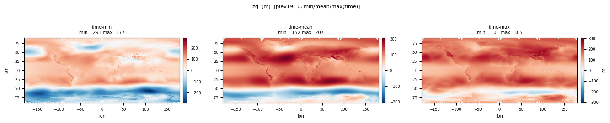
| Quantity | Expected | Observed |
|---|---|---|
| min | -500 | -720.6 |
| mean | ~1e4 (mid-trop) | 3226.3 |
| max | 35000 | 7687.1 |
Observed numbers above are from zg_tpt-p7h-hxy-air_6hr_glb_gn_AWI-ESM-3_picontrol_r1i1p1f1_158701010900-158712312100.nc. Per-file detail and diagnosis below.
| Status | File (4) | min | mean | max |
|---|---|---|---|---|
| WARN | zg_tavg-p19-hxy-air_day_glb_gn_AWI-ESM-3_picontrol_r1i1p1f1_15870101-15871231.ncmax 5.04e+04 slightly above expected_max 3.5e+04 | -638.8 | 15114.0 | 50436.5 |
| WARN | zg_tavg-p19-hxy-air_mon_glb_gn_AWI-ESM-3_picontrol_r1i1p1f1_158701-158712.ncmax 5.02e+04 slightly above expected_max 3.5e+04 | -291.1 | 15113.9 | 50248.1 |
| WARN | zg_tpt-p7h-hxy-air_6hr_glb_gn_AWI-ESM-3_picontrol_r1i1p1f1_158701010900-158712312100.ncobserved range [-721, 7.69e+03] is 0.22x the expected envelope — possibly too small | -720.6 | 3226.3 | 7687.1 |
| WARN | zg_tpt-p7h-hxy-air_6hr_glb_gn_AWI-ESM-3_picontrol_r1i1p1f1_158801010300-158801010300.ncobserved range [-304, 7.62e+03] is 0.22x the expected envelope — possibly too small | -304.0 | 3217.8 | 7616.1 |
PASS
Global Mean Mole Fraction of CFC11
CF: mole_fraction_of_cfc11_in_air
Mole fraction is used in the construction mole_fraction_of_X_in_Y, where X is a material constituent of Y. The chemical formula of CFC11 is CFCl3. The IUPAC name for CFC11 is trichloro-fluoro-methane.
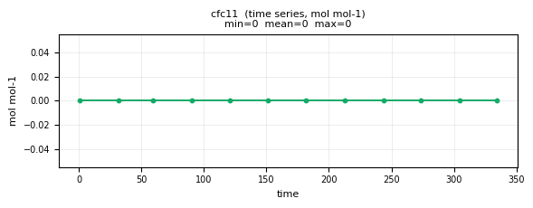
| Quantity | Expected | Observed |
|---|---|---|
| min | 0 | 0 |
| mean | ~0 | 0 |
| max | ~0 | 0 |
| Status | File (1) | min | mean | max |
|---|---|---|---|---|
| PASS | cfc11_tavg-u-hm-u_mon_glb_gn_AWI-ESM-3_picontrol_r1i1p1f1_158701-158712.nc | 0 | 0 | 0 |
Global Mean Mole Fraction of CFC12
CF: mole_fraction_of_cfc12_in_air
Mole fraction is used in the construction mole_fraction_of_X_in_Y, where X is a material constituent of Y. The chemical formula of CFC12 is CF2Cl2. The IUPAC name for CFC12 is dichloro-difluoro-methane.
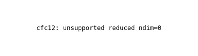
| Quantity | Expected | Observed |
|---|---|---|
| min | 0 | 0 |
| mean | ~0 | 0 |
| max | ~0 | 0 |
| Status | File (1) | min | mean | max |
|---|---|---|---|---|
| PASS | cfc12_tavg-u-hm-u_mon_glb_gn_AWI-ESM-3_picontrol_r1i1p1f1_158701-158712.nc | 0 | 0 | 0 |
Mole Fraction of CH4
CF: mole_fraction_of_methane_in_air
Mole fraction is used in the construction mole_fraction_of_X_in_Y, where X is a material constituent of Y.
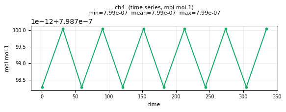
| Quantity | Expected | Observed |
|---|---|---|
| min | ~1e-7 | 7.988e-07 |
| mean | ~7.22e-7 | 7.988e-07 |
| max | ~9e-7 | 7.988e-07 |
| Status | File (1) | min | mean | max |
|---|---|---|---|---|
| PASS | ch4_tavg-u-hm-u_mon_glb_gn_AWI-ESM-3_picontrol_r1i1p1f1_158701-158712.nc | 7.988e-07 | 7.988e-07 | 7.988e-07 |
Fraction of Time Convection Occurs in Cell
CF: convection_time_fraction
Fraction of time that convection occurs in the grid cell. If native cell data is regridded, the area-weighted mean of the contributing cells should be reported.
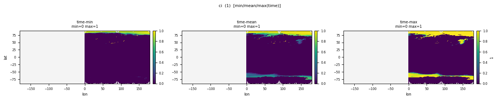
| Quantity | Expected | Observed |
|---|---|---|
| min | 0 | 0 |
| mean | ~0.1 | 0.03419 |
| max | 1 | 1.000 |
| Status | File (1) | min | mean | max |
|---|---|---|---|---|
| PASS | ci_tavg-u-hxy-u_mon_glb_gn_AWI-ESM-3_picontrol_r1i1p1f1_158701-158712.nc | 0 | 0.03419 | 1.000 |
Total Cloud Cover Percentage
CF: cloud_area_fraction
for the whole atmospheric column, as seen from the surface or the top of the atmosphere. Include both large-scale and convective cloud. This is a 3-hour mean.
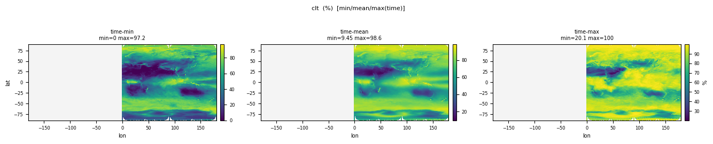
| Quantity | Expected | Observed |
|---|---|---|
| min | 0 | 0 |
| mean | ~66 | 66.106 |
| max | 100 | 100.0 |
| Status | File (3) | min | mean | max |
|---|---|---|---|---|
| PASS | clt_tavg-u-hxy-u_1hr_30s-90s_gn_AWI-ESM-3_picontrol_r1i1p1f1_158701010030-158712312330.nc | 0 | 74.889 | 100.0 |
| PASS | clt_tavg-u-hxy-u_day_glb_gn_AWI-ESM-3_picontrol_r1i1p1f1_15870101-15871231.nc | 0 | 66.106 | 100.0 |
| PASS | clt_tavg-u-hxy-u_mon_glb_gn_AWI-ESM-3_picontrol_r1i1p1f1_158701-158712.nc | 0 | 66.103 | 100.000 |
Mass Fraction of Cloud Liquid Water
CF: mass_fraction_of_cloud_liquid_water_in_air
Calculated as the mass of cloud liquid water in the grid cell divided by the mass of air (including the water in all phases) in the grid cell. This includes precipitating hydrometeors ONLY if the precipitating hydrometeors affect the calculation of radiative transfer in model.
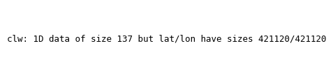
| Quantity | Expected | Observed |
|---|---|---|
| min | 0 | 0 |
| mean | ~1e-5 | 2.364e-06 |
| max | ~2e-3 | 8.763e-04 |
| Status | File (1) | min | mean | max |
|---|---|---|---|---|
| PASS | clw_tavg-al-hxy-u_mon_glb_gn_AWI-ESM-3_picontrol_r1i1p1f1_158701-158712.nc | 0 | 2.364e-06 | 8.763e-04 |
total emission of CH4 from all biomass burning
CF: tendency_of_atmosphere_mass_content_of_methane_due_to_emission_from_fires
Total emission rate of methane (CH4) into the atmosphere from all biomass burning (natural and anthropogenic)
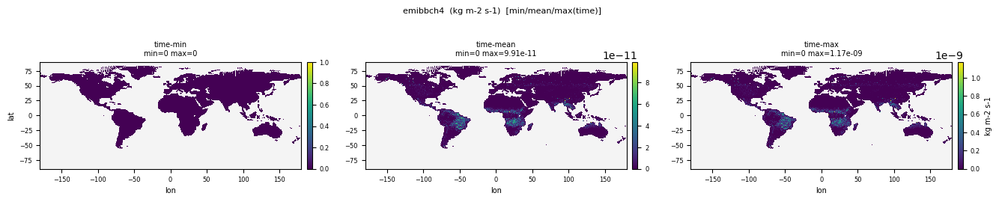
| Quantity | Expected | Observed |
|---|---|---|
| min | 0 | 0 |
| mean | ~1e-12 | 3.781e-12 |
| max | ~1e-8 | 7.785e-09 |
| Status | File (2) | min | mean | max |
|---|---|---|---|---|
| PASS | emibbch4_tavg-u-hxy-u_mon_glb_gn_AWI-ESM-3_picontrol_r1i1p1f1_158601-158612.nc | 0 | 3.781e-12 | 7.785e-09 |
| PASS | emibbch4_tavg-u-hxy-u_mon_glb_gn_AWI-ESM-3_picontrol_r1i1p1f1_158701-158712.nc | 0 | 3.653e-12 | 8.226e-09 |
Relative Humidity
CF: relative_humidity
This is the relative humidity with respect to liquid water for T> 0 C, and with respect to ice for T<0 C.
| Quantity | Expected | Observed |
|---|---|---|
| min | 0 | 0 |
| mean | ~60 | 0 |
| max | 100 | 0 |
| Status | File (3) | min | mean | max |
|---|---|---|---|---|
| PASS | hur_tavg-al-hxy-u_mon_glb_gn_AWI-ESM-3_picontrol_r1i1p1f1_158701-158712.nc | 0 | 0 | 0 |
| PASS | hur_tavg-p19-hxy-air_mon_glb_gn_AWI-ESM-3_picontrol_r1i1p1f1_158701-158712.nc | 2.465e-05 | 32.819 | 100.0 |
| PASS | hur_tavg-p19-hxy-u_day_glb_gn_AWI-ESM-3_picontrol_r1i1p1f1_15870101-15871231.nc | 6.300e-06 | 32.758 | 100.0 |
Hourly relative humidity at the surface
CF: relative_humidity
Relative humidity at 2m above the surface
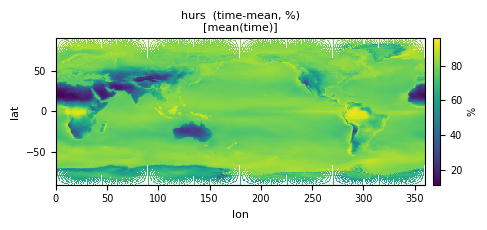
| Quantity | Expected | Observed |
|---|---|---|
| min | 10 | 0.804 |
| mean | ~75 | 73.927 |
| max | 100 | 100.0 |
| Status | File (9) | min | mean | max |
|---|---|---|---|---|
| PASS | hurs_tavg-h2m-hxy-u_1hr_30s-90s_gn_AWI-ESM-3_picontrol_r1i1p1f1_158701010030-158712312330.nc | 0.7439 | 77.156 | 100.0 |
| PASS | hurs_tavg-h2m-hxy-u_1hr_glb_gn_AWI-ESM-3_picontrol_r1i1p1f1_158701010030-158712312330.nc | 0.1181 | 74.412 | 100.0 |
| PASS | hurs_tavg-h2m-hxy-u_6hr_glb_gn_AWI-ESM-3_picontrol_r1i1p1f1_158701010300-158712312100.nc | 0.2031 | 74.412 | 100.0 |
| PASS | hurs_tavg-h2m-hxy-u_day_glb_gn_AWI-ESM-3_picontrol_r1i1p1f1_15870101-15871231.nc | 0.804 | 73.927 | 100.0 |
| PASS | hurs_tavg-h2m-hxy-u_mon_glb_gn_AWI-ESM-3_picontrol_r1i1p1f1_158701-158712.nc | 4.575 | 73.552 | 99.996 |
| PASS | hurs_tmax-h2m-hxy-u_day_glb_gn_AWI-ESM-3_picontrol_r1i1p1f1_15870101-15871231.nc | 0.804 | 73.927 | 100.0 |
| PASS | hurs_tmin-h2m-hxy-u_day_glb_gn_AWI-ESM-3_picontrol_r1i1p1f1_15870101-15871231.nc | 0.804 | 73.927 | 100.0 |
| PASS | hurs_tpt-h2m-hxy-u_3hr_glb_gn_AWI-ESM-3_picontrol_r1i1p1f1_158701010430-158712312230.nc | 0.1181 | 74.411 | 100.0 |
| PASS | hurs_tpt-h2m-hxy-u_3hr_glb_gn_AWI-ESM-3_picontrol_r1i1p1f1_158801010130-158801010130.nc | 2.002 | 76.339 | 100.0 |
Specific Humidity
CF: specific_humidity
Specific humidity is the mass fraction of water vapor in (moist) air.
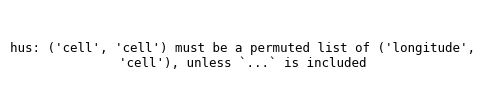
| Quantity | Expected | Observed |
|---|---|---|
| min | ~1e-6 | 6.455e-07 |
| mean | ~3e-3 | 0.001924 |
| max | ~0.025 | 0.02313 |
| Status | File (5) | min | mean | max |
|---|---|---|---|---|
| PASS | hus_tavg-al-hxy-u_mon_glb_gn_AWI-ESM-3_picontrol_r1i1p1f1_158701-158712.nc | 6.455e-07 | 0.001924 | 0.02313 |
| PASS | hus_tavg-p19-hxy-u_day_glb_gn_AWI-ESM-3_picontrol_r1i1p1f1_15870101-15871231.nc | 3.152e-07 | 0.001618 | 0.02624 |
| PASS | hus_tavg-p19-hxy-u_mon_glb_gn_AWI-ESM-3_picontrol_r1i1p1f1_158701-158712.nc | 7.287e-07 | 0.001618 | 0.02313 |
| PASS | hus_tpt-p7h-hxy-air_6hr_glb_gn_AWI-ESM-3_picontrol_r1i1p1f1_158701010900-158712312100.nc | 8.241e-09 | 0.004354 | 0.02957 |
| PASS | hus_tpt-p7h-hxy-air_6hr_glb_gn_AWI-ESM-3_picontrol_r1i1p1f1_158801010300-158801010300.nc | 3.971e-06 | 0.004197 | 0.02121 |
Liquid Water Path
CF: atmosphere_mass_content_of_cloud_liquid_water
The total mass of liquid water in cloud per unit area.
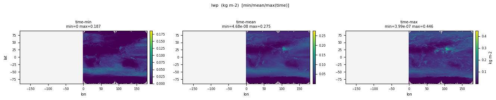
| Quantity | Expected | Observed |
|---|---|---|
| min | 0 | 0 |
| mean | ~0.05-0.1 | 0.04165 |
| max | ~0.5 | 0.4456 |
| Status | File (1) | min | mean | max |
|---|---|---|---|---|
| PASS | lwp_tavg-u-hxy-u_mon_glb_gn_AWI-ESM-3_picontrol_r1i1p1f1_158701-158712.nc | 0 | 0.04165 | 0.4456 |
Mole Fraction of N2O
CF: mole_fraction_of_nitrous_oxide_in_air
Mole fraction is used in the construction mole_fraction_of_X_in_Y, where X is a material constituent of Y. The chemical formula of nitrous oxide is N2O.
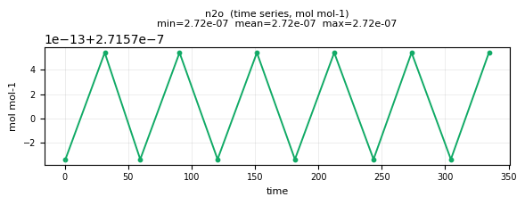
| Quantity | Expected | Observed |
|---|---|---|
| min | ~1e-7 | 2.716e-07 |
| mean | ~2.72e-7 | 2.716e-07 |
| max | ~3.5e-7 | 2.716e-07 |
| Status | File (1) | min | mean | max |
|---|---|---|---|---|
| PASS | n2o_tavg-u-hm-u_mon_glb_gn_AWI-ESM-3_picontrol_r1i1p1f1_158701-158712.nc | 2.716e-07 | 2.716e-07 | 2.716e-07 |
Pressure at Model Full-Levels
CF: air_pressure
Air pressure on model levels
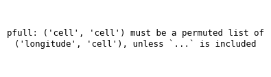
| Quantity | Expected | Observed |
|---|---|---|
| min | ~1 | 1.085 |
| mean | ~5e4 | 32593.0 |
| max | ~101325 | 1.066e+05 |
| Status | File (2) | min | mean | max |
|---|---|---|---|---|
| PASS | pfull_tavg-al-hxy-u_day_glb_gn_AWI-ESM-3_picontrol_r1i1p1f1_15870101-15871231.nc | 1.085 | 32593.0 | 1.085e+05 |
| PASS | pfull_tclm-al-hxy-u_mon_glb_gn_AWI-ESM-3_picontrol_r1i1p1f1_158701-158712.nc | 1.085 | 32593.0 | 1.066e+05 |
Water Vapor Path
CF: atmosphere_mass_content_of_water_vapor
Vertically integrated mass of water vapour through the atmospheric column
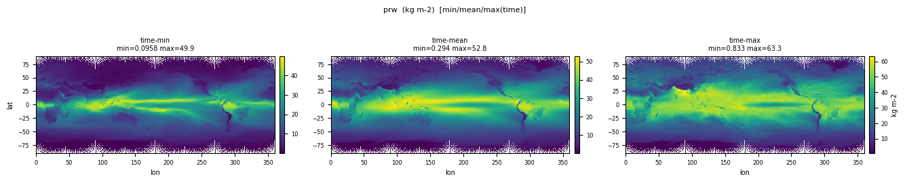
| Quantity | Expected | Observed |
|---|---|---|
| min | 0.5 | 0.04764 |
| mean | ~25 | 24.411 |
| max | ~70 | 77.679 |
| Status | File (2) | min | mean | max |
|---|---|---|---|---|
| PASS | prw_tavg-u-hxy-u_day_glb_gn_AWI-ESM-3_picontrol_r1i1p1f1_15870101-15871231.nc | 0.04764 | 24.411 | 77.679 |
| PASS | prw_tavg-u-hxy-u_mon_glb_gn_AWI-ESM-3_picontrol_r1i1p1f1_158701-158712.nc | 0.09576 | 24.406 | 67.849 |
Surface Air Pressure
CF: surface_air_pressure
surface pressure (not mean sea-level pressure), 2-D field to calculate the 3-D pressure field from hybrid coordinates
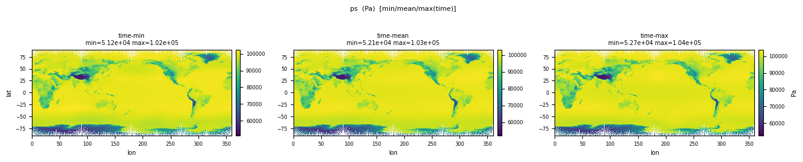
| Quantity | Expected | Observed |
|---|---|---|
| min | 50000 | 48501.1 |
| mean | ~98500 | 98653.1 |
| max | 105000 | 1.091e+05 |
| Status | File (8) | min | mean | max |
|---|---|---|---|---|
| PASS | ps_tavg-u-hxy-u_day_glb_gn_AWI-ESM-3_picontrol_r1i1p1f1_15870101-15871231.nc | 48659.5 | 98653.1 | 1.089e+05 |
| PASS | ps_tavg-u-hxy-u_mon_glb_gn_AWI-ESM-3_picontrol_r1i1p1f1_158701-158712.nc | 49178.9 | 98653.1 | 1.070e+05 |
| PASS | ps_tpt-u-hxy-u_1hr_30s-90s_gn_AWI-ESM-3_picontrol_r1i1p1f1_158701010030-158712312330.nc | 55192.9 | 97833.4 | 1.057e+05 |
| PASS | ps_tpt-u-hxy-u_1hr_glb_gn_AWI-ESM-3_picontrol_r1i1p1f1_158701010030-158712312330.nc | 48501.1 | 98653.1 | 1.091e+05 |
| PASS | ps_tpt-u-hxy-u_3hr_glb_gn_AWI-ESM-3_picontrol_r1i1p1f1_158701010430-158712312230.nc | 48519.4 | 98653.1 | 1.091e+05 |
| PASS | ps_tpt-u-hxy-u_3hr_glb_gn_AWI-ESM-3_picontrol_r1i1p1f1_158801010130-158801010130.nc | 49017.1 | 98650.2 | 1.077e+05 |
| PASS | ps_tpt-u-hxy-u_6hr_glb_gn_AWI-ESM-3_picontrol_r1i1p1f1_158701010900-158712312100.nc | 48550.6 | 98653.1 | 1.091e+05 |
| PASS | ps_tpt-u-hxy-u_6hr_glb_gn_AWI-ESM-3_picontrol_r1i1p1f1_158801010300-158801010300.nc | 49017.1 | 98650.2 | 1.077e+05 |
Sea Level Pressure
CF: air_pressure_at_mean_sea_level
Sea Level Pressure
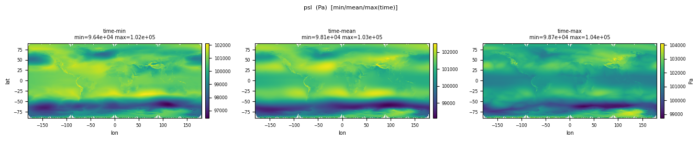
| Quantity | Expected | Observed |
|---|---|---|
| min | 95000 | 91315.7 |
| mean | ~101325 | 1.011e+05 |
| max | 105000 | 1.075e+05 |
| Status | File (6) | min | mean | max |
|---|---|---|---|---|
| PASS | psl_tavg-u-hxy-u_day_glb_gn_AWI-ESM-3_picontrol_r1i1p1f1_15870101-15871231.nc | 92323.8 | 1.011e+05 | 1.064e+05 |
| PASS | psl_tavg-u-hxy-u_mon_glb_gn_AWI-ESM-3_picontrol_r1i1p1f1_158701-158712.nc | 96442.2 | 1.011e+05 | 1.041e+05 |
| PASS | psl_tpt-u-hxy-u_1hr_glb_gn_AWI-ESM-3_picontrol_r1i1p1f1_158701010130-158712312330.nc | 91315.7 | 1.011e+05 | 1.075e+05 |
| PASS | psl_tpt-u-hxy-u_1hr_glb_gn_AWI-ESM-3_picontrol_r1i1p1f1_158801010030-158801010030.nc | 96303.0 | 1.012e+05 | 1.044e+05 |
| PASS | psl_tpt-u-hxy-u_6hr_glb_gn_AWI-ESM-3_picontrol_r1i1p1f1_158701010900-158712312100.nc | 91343.5 | 1.011e+05 | 1.073e+05 |
| PASS | psl_tpt-u-hxy-u_6hr_glb_gn_AWI-ESM-3_picontrol_r1i1p1f1_158801010300-158801010300.nc | 96303.0 | 1.012e+05 | 1.044e+05 |
Surface Downwelling Clear-Sky Longwave Radiation
CF: surface_downwelling_longwave_flux_in_air_assuming_clear_sky
Surface downwelling clear-sky longwave radiation
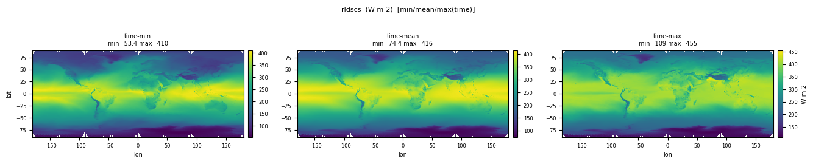
| Quantity | Expected | Observed |
|---|---|---|
| min | 80 | 41.080 |
| mean | ~315 | 316.7 |
| max | 430 | 469.3 |
| Status | File (2) | min | mean | max |
|---|---|---|---|---|
| PASS | rldscs_tavg-u-hxy-u_day_glb_gn_AWI-ESM-3_picontrol_r1i1p1f1_15870101-15871231.nc | 41.080 | 316.7 | 469.3 |
| PASS | rldscs_tavg-u-hxy-u_mon_glb_gn_AWI-ESM-3_picontrol_r1i1p1f1_158701-158712.nc | 53.375 | 316.7 | 455.4 |
Net Longwave Surface Radiation
CF: surface_net_downward_longwave_flux
Net longwave radiation
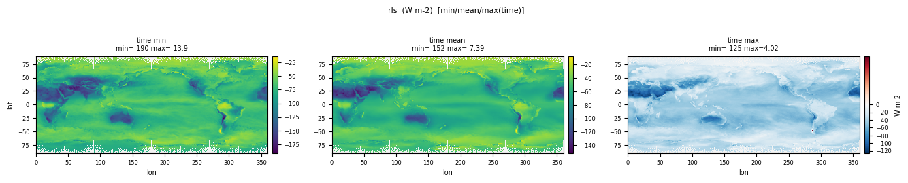
| Quantity | Expected | Observed |
|---|---|---|
| min | -200 | -232.6 |
| mean | ~-55 | -60.060 |
| max | 50 | 62.357 |
| Status | File (2) | min | mean | max |
|---|---|---|---|---|
| PASS | rls_tavg-u-hxy-u_day_glb_gn_AWI-ESM-3_picontrol_r1i1p1f1_15870101-15871231.nc | -232.6 | -60.060 | 62.357 |
| PASS | rls_tavg-u-hxy-u_mon_glb_gn_AWI-ESM-3_picontrol_r1i1p1f1_158701-158712.nc | -205.3 | -60.060 | 5.753 |
Surface Upwelling Clear-Sky Longwave Radiation
CF: surface_upwelling_longwave_flux_assuming_clear_sky
Surface Upwelling Clear-sky Longwave Radiation
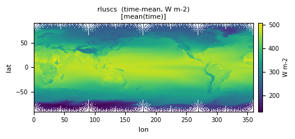
| Quantity | Expected | Observed |
|---|---|---|
| min | 150 | 67.542 |
| mean | ~398 | 400.4 |
| max | 520 | 598.9 |
| Status | File (2) | min | mean | max |
|---|---|---|---|---|
| PASS | rluscs_tavg-u-hxy-u_day_glb_gn_AWI-ESM-3_picontrol_r1i1p1f1_15870101-15871231.nc | 67.542 | 400.4 | 598.9 |
| PASS | rluscs_tavg-u-hxy-u_mon_glb_gn_AWI-ESM-3_picontrol_r1i1p1f1_158701-158712.nc | 89.024 | 400.3 | 563.7 |
TOA Outgoing Longwave Radiation
CF: toa_outgoing_longwave_flux
TOA outgoing longwave radiation
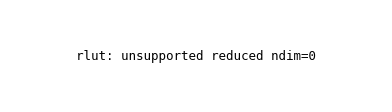
| Quantity | Expected | Observed |
|---|---|---|
| min | 120 | 71.272 |
| mean | ~239 | 245.1 |
| max | 320 | 367.0 |
| Status | File (2) | min | mean | max |
|---|---|---|---|---|
| PASS | rlut_tavg-u-hxy-u_day_glb_gn_AWI-ESM-3_picontrol_r1i1p1f1_15870101-15871231.nc | 71.272 | 245.1 | 367.0 |
| PASS | rlut_tavg-u-hxy-u_mon_glb_gn_AWI-ESM-3_picontrol_r1i1p1f1_158701-158712.nc | 96.096 | 245.1 | 349.3 |
Surface Downwelling Clear-Sky Shortwave Radiation
CF: surface_downwelling_shortwave_flux_in_air_assuming_clear_sky
Surface solar irradiance clear sky for UV calculations
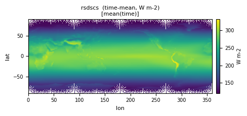
| Quantity | Expected | Observed |
|---|---|---|
| min | 0 | 0 |
| mean | ~245 | 248.3 |
| max | 450 | 481.6 |
| Status | File (2) | min | mean | max |
|---|---|---|---|---|
| PASS | rsdscs_tavg-u-hxy-u_day_glb_gn_AWI-ESM-3_picontrol_r1i1p1f1_15870101-15871231.nc | 0 | 248.3 | 481.6 |
| PASS | rsdscs_tavg-u-hxy-u_mon_glb_gn_AWI-ESM-3_picontrol_r1i1p1f1_158701-158712.nc | 0 | 248.4 | 468.0 |
TOA Incident Shortwave Radiation
CF: toa_incoming_shortwave_flux
Shortwave radiation incident at the top of the atmosphere
| Quantity | Expected | Observed |
|---|---|---|
| min | 0 | 0 |
| mean | ~340 | 347.7 |
| max | ~550 | 559.8 |
| Status | File (2) | min | mean | max |
|---|---|---|---|---|
| PASS | rsdt_tavg-u-hxy-u_day_glb_gn_AWI-ESM-3_picontrol_r1i1p1f1_15870101-15871231.nc | 0 | 347.7 | 559.8 |
| PASS | rsdt_tavg-u-hxy-u_mon_glb_gn_AWI-ESM-3_picontrol_r1i1p1f1_158701-158712.nc | 0 | 347.7 | 548.6 |
Surface Upwelling Clear-Sky Shortwave Radiation
CF: surface_upwelling_shortwave_flux_in_air_assuming_clear_sky
Surface Upwelling Clear-sky Shortwave Radiation
| Quantity | Expected | Observed |
|---|---|---|
| min | 0 | 0 |
| mean | ~30 | 31.667 |
| max | 350 | 405.9 |
| Status | File (2) | min | mean | max |
|---|---|---|---|---|
| PASS | rsuscs_tavg-u-hxy-u_day_glb_gn_AWI-ESM-3_picontrol_r1i1p1f1_15870101-15871231.nc | 0 | 31.667 | 405.9 |
| PASS | rsuscs_tavg-u-hxy-u_mon_glb_gn_AWI-ESM-3_picontrol_r1i1p1f1_158701-158712.nc | 0 | 31.673 | 385.1 |
TOA Outgoing Shortwave Radiation
CF: toa_outgoing_shortwave_flux
TOA outgoing shortwave radiation
| Quantity | Expected | Observed |
|---|---|---|
| min | 0 | 0 |
| mean | ~100 | 97.125 |
| max | 400 | 404.1 |
| Status | File (2) | min | mean | max |
|---|---|---|---|---|
| PASS | rsut_tavg-u-hxy-u_day_glb_gn_AWI-ESM-3_picontrol_r1i1p1f1_15870101-15871231.nc | 0 | 97.125 | 404.1 |
| PASS | rsut_tavg-u-hxy-u_mon_glb_gn_AWI-ESM-3_picontrol_r1i1p1f1_158701-158712.nc | 0 | 97.139 | 390.1 |
Net Downward Radiative Flux at Top of Model
CF: net_downward_radiative_flux_at_top_of_atmosphere_model
i.e., at the top of that portion of the atmosphere where dynamics are explicitly treated by the model. This is reported only if it differs from the net downward radiative flux at the top of the atmosphere.
| Quantity | Expected | Observed |
|---|---|---|
| min | -200 | -210.9 |
| mean | ~0 (piControl balanced) | 5.460 |
| max | 200 | 186.4 |
| Status | File (1) | min | mean | max |
|---|---|---|---|---|
| PASS | rtmt_tavg-u-hxy-u_mon_glb_gn_AWI-ESM-3_picontrol_r1i1p1f1_158701-158712.nc | -210.9 | 5.460 | 186.4 |
Hourly surface wind speed
CF: wind_speed
Hourly near-surface wind speed at 10m above the ground
| Quantity | Expected | Observed |
|---|---|---|
| min | 0 | 1.277e-06 |
| mean | ~6.5 | 6.207 |
| max | ~40 | 44.047 |
| Status | File (5) | min | mean | max |
|---|---|---|---|---|
| PASS | sfcWind_tavg-h10m-hxy-u_1hr_30s-90s_gn_AWI-ESM-3_picontrol_r1i1p1f1_158701010030-158712312330.nc | 5.758e-06 | 8.646 | 43.999 |
| PASS | sfcWind_tavg-h10m-hxy-u_1hr_glb_gn_AWI-ESM-3_picontrol_r1i1p1f1_158701010030-158712312330.nc | 1.277e-06 | 6.207 | 44.047 |
| PASS | sfcWind_tavg-h10m-hxy-u_day_glb_gn_AWI-ESM-3_picontrol_r1i1p1f1_15870101-15871231.nc | 3.905e-04 | 5.756 | 35.437 |
| PASS | sfcWind_tavg-h10m-hxy-u_mon_glb_gn_AWI-ESM-3_picontrol_r1i1p1f1_158701-158712.nc | 7.280e-04 | 4.006 | 19.167 |
| PASS | sfcWind_tmax-h10m-hxy-u_day_glb_gn_AWI-ESM-3_picontrol_r1i1p1f1_15870101-15871231.nc | 0.1938 | 8.056 | 44.047 |
Percentage of the Grid Cell Occupied by Land (Including Lakes)
CF: land_area_fraction
Percentage of horizontal area occupied by land.
| Quantity | Expected | Observed |
|---|---|---|
| min | 0 | 0 |
| mean | ~29 | 27.844 |
| max | 100 | 100.0 |
| Status | File (1) | min | mean | max |
|---|---|---|---|---|
| PASS | sftlf_ti-u-hxy-u_fx_glb_gn_AWI-ESM-3_picontrol_r1i1p1f1.nc | 0 | 27.844 | 100.0 |
Air Temperature
CF: air_temperature
Air Temperature
| Quantity | Expected | Observed |
|---|---|---|
| min | 180 | 202.6 |
| mean | 255 | 273.8 |
| max | 310 | 297.9 |
| Status | File (8) | min | mean | max |
|---|---|---|---|---|
| PASS | ta_tavg-700hPa-hxy-air_day_glb_gn_AWI-ESM-3_picontrol_r1i1p1f1_15870101-15871231.nc | 202.6 | 273.8 | 297.9 |
| PASS | ta_tavg-al-hxy-u_mon_glb_gn_AWI-ESM-3_picontrol_r1i1p1f1_158701-158712.nc | 180.1 | 243.4 | 313.2 |
| PASS | ta_tavg-p19-hxy-air_day_glb_gn_AWI-ESM-3_picontrol_r1i1p1f1_15870101-15871231.nc | 177.0 | 241.3 | 320.5 |
| PASS | ta_tavg-p19-hxy-air_mon_glb_gn_AWI-ESM-3_picontrol_r1i1p1f1_158701-158712.nc | 182.8 | 241.3 | 316.6 |
| PASS | ta_tpt-p3-hxy-air_6hr_glb_gn_AWI-ESM-3_picontrol_r1i1p1f1_158701010900-158712312100.nc | 208.5 | 284.8 | 325.5 |
| PASS | ta_tpt-p3-hxy-air_6hr_glb_gn_AWI-ESM-3_picontrol_r1i1p1f1_158801010300-158801010300.nc | 227.2 | 283.4 | 311.6 |
| PASS | ta_tpt-p7h-hxy-air_6hr_glb_gn_AWI-ESM-3_picontrol_r1i1p1f1_158701010900-158712312100.nc | 198.6 | 271.6 | 325.5 |
| PASS | ta_tpt-p7h-hxy-air_6hr_glb_gn_AWI-ESM-3_picontrol_r1i1p1f1_158801010300-158801010300.nc | 218.4 | 270.8 | 311.6 |
Near-Surface Air Temperature
CF: air_temperature
Temperature at surface
| Quantity | Expected | Observed |
|---|---|---|
| min | 220 | 187.1 |
| mean | 287 | 287.7 |
| max | 320 | 325.4 |
| Status | File (10) | min | mean | max |
|---|---|---|---|---|
| PASS | tas_tavg-h2m-hxy-u_day_glb_gn_AWI-ESM-3_picontrol_r1i1p1f1_15870101-15871231.nc | 188.2 | 287.7 | 315.5 |
| PASS | tas_tavg-h2m-hxy-u_mon_glb_gn_AWI-ESM-3_picontrol_r1i1p1f1_158701-158712.nc | 203.3 | 287.7 | 312.5 |
| PASS | tas_tavg-u-hxy-u_1hr_30s-90s_gn_AWI-ESM-3_picontrol_r1i1p1f1_158701010030-158712312330.nc | 187.1 | 276.4 | 324.5 |
| PASS | tas_tavg-u-hxy-u_1hr_glb_gn_AWI-ESM-3_picontrol_r1i1p1f1_158701010030-158712312330.nc | 187.1 | 287.7 | 325.4 |
| PASS | tas_tmax-h2m-hxy-u_day_glb_gn_AWI-ESM-3_picontrol_r1i1p1f1_15870101-15871231.nc | 189.0 | 289.8 | 325.4 |
| PASS | tas_tmaxavg-h2m-hxy-u_mon_glb_gn_AWI-ESM-3_picontrol_r1i1p1f1_158701-158712.nc | 205.9 | 289.8 | 320.4 |
| PASS | tas_tmin-h2m-hxy-u_day_glb_gn_AWI-ESM-3_picontrol_r1i1p1f1_15870101-15871231.nc | 187.1 | 285.7 | 309.7 |
| PASS | tas_tminavg-h2m-hxy-u_mon_glb_gn_AWI-ESM-3_picontrol_r1i1p1f1_158701-158712.nc | 200.0 | 285.7 | 305.6 |
| PASS | tas_tpt-h2m-hxy-u_3hr_glb_gn_AWI-ESM-3_picontrol_r1i1p1f1_158701010430-158712312230.nc | 187.2 | 287.7 | 324.9 |
| PASS | tas_tpt-h2m-hxy-u_3hr_glb_gn_AWI-ESM-3_picontrol_r1i1p1f1_158801010130-158801010130.nc | 220.3 | 285.5 | 308.5 |
Total Column Ozone
CF: equivalent_thickness_at_stp_of_atmosphere_ozone_content
Total ozone column
| Quantity | Expected | Observed |
|---|---|---|
| min | 2.2e-3 | 0.001602 |
| mean | 3e-3 | 0.002764 |
| max | 5e-3 | 0.004867 |
| Status | File (1) | min | mean | max |
|---|---|---|---|---|
| PASS | toz_tavg-u-hxy-u_mon_glb_gn_AWI-ESM-3_picontrol_r1i1p1f1_158701-158712.nc | 0.001602 | 0.002764 | 0.004867 |
Surface Temperature
CF: surface_temperature
Surface temperature (skin for open ocean)
| Quantity | Expected | Observed |
|---|---|---|
| min | 220 | 176.6 |
| mean | 288 | 288.9 |
| max | 330 | 353.6 |
| Status | File (8) | min | mean | max |
|---|---|---|---|---|
| PASS | ts_tavg-u-hxy-si_day_glb_gn_AWI-ESM-3_picontrol_r1i1p1f1_15870101-15871231.nc | 174.0 | 257.8 | 273.1 |
| PASS | ts_tavg-u-hxy-si_mon_glb_gn_AWI-ESM-3_picontrol_r1i1p1f1_158701-158712.nc | 185.0 | 259.0 | 273.1 |
| PASS | ts_tavg-u-hxy-sn_day_glb_gn_AWI-ESM-3_picontrol_r1i1p1f1_15870101-15871231.nc | 185.5 | 271.5 | 273.2 |
| PASS | ts_tavg-u-hxy-u_1hr_glb_gn_AWI-ESM-3_picontrol_r1i1p1f1_158701010030-158712312330.nc | 176.6 | 288.9 | 353.6 |
| PASS | ts_tavg-u-hxy-u_mon_glb_gn_AWI-ESM-3_picontrol_r1i1p1f1_158701-158712.nc | 198.7 | 288.9 | 316.4 |
| PASS | ts_tpt-u-hxy-u_3hr_glb_gn_AWI-ESM-3_picontrol_r1i1p1f1_158701010130-158712312230.nc | 183.6 | 288.9 | 348.9 |
| PASS | ts_tpt-u-hxy-u_6hr_glb_gn_AWI-ESM-3_picontrol_r1i1p1f1_158701010900-158712312100.nc | 178.8 | 288.9 | 353.6 |
| PASS | ts_tpt-u-hxy-u_6hr_glb_gn_AWI-ESM-3_picontrol_r1i1p1f1_158801010300-158801010300.nc | 214.5 | 286.1 | 327.5 |
Maximum Wind Speed of Gust at 100m
CF: wind_speed_of_gust
Wind speed gust maximum at 100m above surface
| Quantity | Expected | Observed |
|---|---|---|
| min | 0 | 3.252 |
| mean | 8 | 18.115 |
| max | 60 | 58.489 |
| Status | File (1) | min | mean | max |
|---|---|---|---|---|
| PASS | wsg_tmax-h10m-hxy-u_mon_glb_gn_AWI-ESM-3_picontrol_r1i1p1f1_158701-158712.nc | 3.252 | 18.115 | 58.489 |